作者：湯亞汀
|弦鳴樂器|絃樂器|氣鳴樂器|膜鳴樂器|體鳴樂器|用亞蘭文拼寫的樂器|
《聖經·舊約》中提及樂器名稱近20種。其中有些伴有說明，大致可以確定其類別；而有些從《舊約》本身找不到依據，要靠後來的文獻典籍來推測；還有個別的則很難確定是何類樂器。自《舊約》問世（寫作時間約從元前十七世紀至元前二世紀）以來，學者們就這些樂器的希伯來文名稱（其中六種樂器用亞蘭方言［一種古敘利亞語］拼寫）爭論不休。這一爭論自然也反映到《聖經》的各種譯本中，其中最重要的如：紀元前三世紀 ~ 紀元前二世紀的希臘文譯本（通稱Septuagint即"七十子譯本" ），西元四世紀由羅馬天主教會出版的、曾廣為應用的通俗拉丁文譯本（Vulgate），1611年由英王詹姆士一世批准、曾極具權威性並通用至今的英文欽定本（A.V.），1952年由美國學者出版，現廣為應用的英文新譯本"修訂標準本"（R.S.V.）以及我國1919年出版、至今唯一通用的中譯本《新舊約全書》（即"官話和合譯本" ）。這些版本的譯者多不是音樂學者。而且隨著時間的推移，詞義及樂器本身都發生了變化，因而翻譯中隨意猜測，用譯者自己時代的樂器名稱硬套或張冠李戴的現象比比皆是。
本文擬對這些樂器類別及上述五種譯本中的譯名逐一考查、甄別，同時提出筆者對中、英文譯名的修改意見。為方便起見，本文中希伯來文、亞蘭文及希臘文名稱皆用拉丁文字母拼寫。所有樂器名稱的拼寫均以《新格魯夫樂器辭典》為准。
該樂器是《舊約》中出現最早的樂器之一，也是出現最早的弦鳴樂器（創世紀《4:21》，而《舊約》開頭的"五經"中，它又是唯一的絃樂器，可見其古志的淵源。
它的製作材料在大衛時代（元前1010—970年）是松木（《撒母耳記下》6：5），在後來的所羅門時代（元前970—930年）則用檀香木（《列王記上》10:12，《歷代志下》9:11）。音色"柔美" ，合奏時彈出"幽雅"之聲（《詩篇》81:2，92:3。大衛"用手彈琴" ，即不用撥子（《撒母耳記上》16:23），彈奏時需"右手技巧" 。庫爾特·薩克斯認為"用手彈瑟"並非贅詞，而是強調與通常為歌伴奏時"用撥子彈奏"的方式不同而已。他還推斷，這種樂器屬里拉（lyre）類，其狀如半園形，似一燭架，當中平行張羊腸弦若干，無共鳴箱，輕巧、可置於手中（《樂器史》1940年諾爾頓版）。從考古發現的圖像看，可開口向上、垂直置於身前，或開口向前、水平置於身前，甚至可斜置於手中。
絃樂器在古代東方是男性的象徵，KINNOR是大衛創造的樂器（好幾世紀都把"大衛的樂器"誤作豎琴，見下文NEBEL），也具有男性的、高貴的象徵。因而在猶太教��絃樂器被認為最適宜於崇拜儀式，是聖殿樂隊的主要樂器。該樂器在《舊約》中出現42次。多用於歡樂的慶典和宗教儀式，為歌唱伴奏或作背景音樂。如：運送約櫃，班師凱旋，聖城竣工，迎賓宴客，先知受感，治病祛邪，獻祭頌主，甚至用於上帝懲罰時的背景音樂（《以賽亞書》30:32）以及流浪妓女彈唱的樂器（同前23:15，16）。雖然《詩篇》137：2指出這種樂器不適於悲哀場合，但在《以賽亞書》16:11中卻有"哀鳴"音色的描述，可能是一偶然的例外。
KINNOR在古埃及早已有之。從希臘本的Kithara（一種帶共鳴箱的里拉類樂器及其同源詞kinyra和拉丁本由此直譯的cithara來看，英文修訂標準本譯為lyre是準確的，而欽定本譯作harp則屬錯誤的歸類。況且，阿拉伯文本所用的kissari一詞，既有古希臘的影響，也是當今埃塞俄比亞一種lyre的名稱。中譯和合本的"琴"不準確，會不會誤解為中國的"古琴"(一種齊特)？建議按英文改成"里爾"或"里拉"。
With an account of the Development of Modern Musical
Instruments from Ancient Types
By John Stainer, M.A., MUS. doc.) MAGD, COLL., OXON. New Edition. Cassell, Petter, Galpin & Co.:
|
PART I -
CHAPTER I. EARLY
STRING INSTRUMENTS.— |
|
HOME | Contents | ancient:
harps | lyres | page^
THE
first instrument
mentioned in the Bible is the kinnor, translated
"harp" in our [King James/Authorized Version: katapi
Ed.]
version.
Jubal was "the father of such as handle
the kinnor and ugab" (Gen.iv.21).
Authorities are divided as to whether the kinnor
was a harp or a lyre.
There have been attempts to show that it was a trigon,
or three-cornered harp, specimens of which are depicted on some Egyptian
bas-reliefs, and which must have been known to the Romans and Greeks.
Nicomachus mentions the trigon
as having, been adjusted by Pythagoras after discovering the ratios of
consonant harmonics.
|
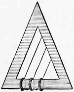 |
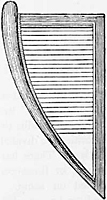 |
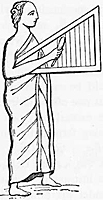 |
The simplest forms of the trigon would be as shown in Figs. 1, 2,
and 3
[As given by Blanchinus, "De tribus
generibus instrumentorum musicae veterum organicae Dissertatio." (Rontie, 1742.)].
But it is probable that one of the characteristics of the instrument was that
there existed only two sides of wooden frame, the third side being formed by
the longest string, as shown in the following illustrations (Figs.
4, 5, 6),
which were copied from tombs at Thebes and Dekkeh.
|
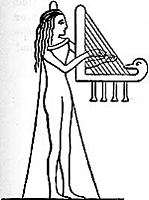 |
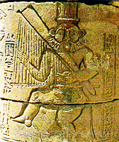 |
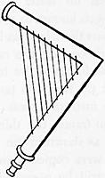 |
It will be observed that the
instrument is not placed upon the ground, but is held under the arm, or is
rested on the shoulder.
(see Fig. 7) [Taken
from a Pompeian fresco, a copy of which is in the author's possession.]
The termination of one of the sides with the head of a bird (probably a goose)
would be forbidden among the Jews, who might not make an image of any animal or
beast.
The next illustration (Fig. 8)
shows a very curious instrument in the museum at
Some authors assert
that this instrument had nine strings, others ten.
The kinnor had, according to Fetis
[Histoire Générale de la. Musique,
vol. i., p. 384.],
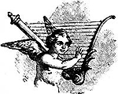
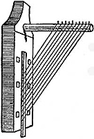
Alamoth is with nebel, and that Sheminith is undoubtedly connected with the number 8, being rendered in the Septuagint ὑπὲρ ῆς ὀγδοής, "on the eighth."|
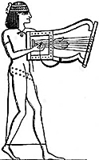 |
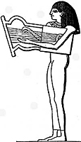 |
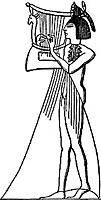 |
Both notions have in all
probability the elements of truth in them, for the lyre and guitar are closely
allied; in the former the upper portion of the strings remains open,
while in the latter the finger-board forms a back or strip of wood behind the
strings for their whole length. If this idea be correct, the kinnor may have been very similar in form, perhaps
even identical with, the instruments shown in Figs. 9, 10,
11.
It was
sometimes played in an upright position, as shown in the above illustration (Fig.11).
The arguments in favour of the kinnor being
a lyre are based upon certain other representations, the most important of
which was discovered by Sir Gardner Wilkinson [Manners and Customs of the
Ancient Egyptians, vol. ii., p. 296.] in a tomb at Beni Hassan.
It is a painting representing the arrival of a company of strangers in
The discoverer suggests that these strangers are no less than Joseph's brethren. He describes them thus:
The first figure is an Egyptian
scribe, who presents an account of their arrival to a person seated, the owner
of the tomb, and one of the principal officers of the reigning Pharaoh.
The next, also an Egyptian, ushers them into his presence; and two advance,
bringing presents—
the wild goat or ibex, and the gazelle, the productions of their country.
Four men, carrying bows and clubs, follow, leading an ass, on which two
children are placed in panniers, accompanied by a boy and four women; and, last
of all, another ass laden, and two men (Fig.12)— one holding a bow and club,
the other a lyre, which he plays with the plectrum. ...
The lyre is rude, and differs a little in form from those generally used in
The authenticity of the above
picture, as representing the arrival of the sons of Jacob, would set the
question of the shape of the kinnor at rest
for ever; but, unfortunately, it remains only a probability.
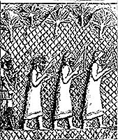
The other representation which has been brought forward as evidence as to the shape of the kinnor is a bas-relief in theIf Layard
is right in supposing these to be Jewish captives, it is certain that the
kinnor was a lyre, because it was their kinnors which they mournfully hung up in the trees
overhanging the "rivers of
We hanged our kinnors upon the willows in the midst thereof.
(Ps.cxx.xvii.2).
But M. Fetis
gives very good reasons for believing that these captives are not Jews, but Barabras or Berbers, for they are, he says, performing on
the kissar, or Ethiopian lyre.
Here is a kissar (Fig. 14).
This illustration shows one of the specimens given by the Viceroy of Egypt to
the
and a plectrum made of horn is used by itself, or with the fingers, or
alternately, by the player.
Engel says that the kissar is certainly one of
the most ancient string instruments known.
Considering the great likeness
between the outline of the kissar and the kinnors in some of the illustrations, it is not
surprising that some authors have confused them.
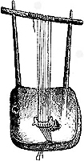
There is, however, one more reason why they should not be kinnors in Fig.13—Two very elegant Egyptian lyres
are depicted on p.19 —
one from the
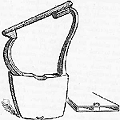
The kinnor
was made of wood—
David made it of berosh, but it is
recorded that Solomon made some of almug wood
for use in the
Whatever be the exact wood signified by almug,
the value of it was evidently very great.
[Josephus
speaks of kinnors made of electrum (ἤλεκτρον), a mixed metal, not amber—
a meaning this word also had.
Probably the pegs only or other small details were made of this material. See
note, p. 32.]
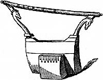
The kinnor was one of the instruments mentioned by Laban the Syrian, as before noticed, a fact which goes far to prove its Syrian origin, although it seems to have been considered Phoenician by some of the ancients.And he appointed certain of the
Levites to minister before the ark of the Lord, and to record, and to thank the
Lord God of Israel ...
Jeiel with psalteries and kinnors;
but Asaph made a sound with cymbals;
Benaiah also and Jahaziel
the priests with trumpets continually before the ark of the covenant of God.
Again, in i
Chron.xxv.3, the kinnor was ordered to be used
by high and important families, as an accompaniment to their prophecy. The sons
of Jeduthun are mentioned as prophesying with a kinnor.
It was also the instrument carried by wandering female minstrels—
Bayaderes—whose character was bad, if one may judge
from the allusion to them in Isa.xxiii.16, where the prophet utters thoughts of
indignant irony against
Take a kinnor,
go about the city,
thou harlot that hast been forgotten;
make sweet melody,
sing many songs,
that thou mayest be remembered.
The people under Jehoshaphat,
returning with joy to
made joyful sounds with psalteries and kinnors
and trumpets.
(2 Chron.xx.28).
The carrying of the kinnor by the captives in
It was also the instrument which, touched by the hand of the youthful and
God-beloved David, drove
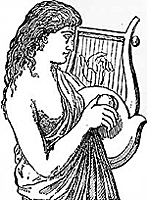
away the wicked spirit of Saul:And it came to pass, when the
evil spirit from God was upon Saul,
that David took a kinnor, and played
with his hand:
so Saul was refreshed, and was well, and the evil spirit departed from him.
(i Sam.xvi.23).
The reader will by this time have
balanced the probabilities as to the nature and construction of the kinnor; and most likely he will be led to
think that it was either a guitar or lyre, a belief which seems to be gaining
ground, on account of the aptitude of such instruments for the uses to which
the kinnor was devoted.
As there is often much confusion
amongst non-musicians as to the real distinction between a lyre and a lute (or
a guitar) two figures are appended, one (Fig.17) showing a youth
playing on a lyre, the other (Fig.18) showing a man playing on a
lute.
From these illustrations it will be distinctly understood that there is nothing
behind the upper portion of the strings of a lyre;
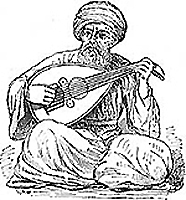
while, on the contrary, the strings of guitars and lutes are carried upwards beyond the body or resonance-box, over a piece of wood called the neck, on which is fastened the smooth piece of wood called the finger-board, because on to its surface the fingers press the strings when playing.最早出現在《撒母耳記上》10:5，是先知受感的樂器，手執於佇列進行中，故體積不大，份量不重。材料同KINNOR，用松木和檀香木（出處同前）。彈法是用手"撥奏"（希伯來文ZAMER）。
該樂器共出現27次，亦多用於歡慶及宗教場合，基本同KINNOR，只是不見於治病、懲罰等場合，也不為流浪歌女所用。
從詞源來看，希伯來文NEBEL原意是"圓花瓶"或"皮瓶子" 。按薩克斯、C.C.J.波林等人意見，這種樂器是一種豎式三角豎琴（豎式，即垂直置於身前；三角，即共鳴箱與弦柱成一角度，而不像埃及豎琴那樣二者成弓形），共鳴箱裹以皮革，狀如一種東方的皮瓶子（《樂器史》；《古代近東音樂》1954年紐約版。）一般認為，這種樂器體積大於KINNOR，弦更粗些，故音色較低沉。
NEBEL與古敘利亞語nabla同源，後者是當時腓尼基的一種豎琴類樂器。希臘文直譯為nabla（有14次），同時也有8次意譯為psalterion，甚至有一處譯作kithara、作了錯誤歸類。Psalterion是古希臘時代的豎琴（主要是一種三角豎琴），拉丁本在全書中堅持用了其同源詞psalterium，但後來該術語逐漸改變而指"盒式齊特" （如psaltery和dulcimer），並進入歐洲其他文字中。欽定本所用psaltery，雖源出於希臘語，但在十七世紀早就是指盒式齊特類的樂器了；而其中還有三處竟譯為viol則更錯了，因為viol是弓弦流特類樂器。雖有少數人認為NEBEL是不同於KINNOR的另一種lyre，但多數意見仍將其歸作harp類，英文修訂標準本則順應了這一多數意見，無疑是明智的。而和合本譯成齊特類的"瑟"是錯誤的。
出現較少且較晚，僅在《詩篇》中有三處（33:2，92:3，144:9）。這也是一種聖殿樂器，只用於頌主儀式。它是NEBEL的變體，'ASOR一詞希伯來文原意是"10" ，因而有"十弦"之說。但許多學者都一再指出《舊約》中與樂器有關的數位（如弦數、樂器件數）多含象徵意義（如"十弦"暗指摩西"十誡" ）、較少實際的音樂含義。約翰·施泰納則認為 'ASOR一詞源於ashor，即Assyrian(harp)，一種古代亞述的三角豎琴（《聖經音樂》第二章，1970年紐約新版，根據1914年倫敦版）。
但薩克斯在其名著《樂器史》中將 'ASOR定為"十弦齊特" ，認為它"由一矩形小框構成，內平行張10弦，矩形寬兩邊不等（似一梯形）。由女樂師垂直執於一手上演奏，不用撥子。"他和另一些學者都認為該樂器源於腓尼基。可是'ASOR同NEBEL聯繫在一起，而幾乎與《舊約》希伯來原本最後幾卷同時完成的希臘本也清楚表明它是豎琴類樂器（psalterion），拉丁本則照抄了希臘本，欽定本與和合本作"十絃樂器"不確切，而修訂標準本的譯法之一lute及和合本的另一譯法"十弦瑟"均作了錯誤歸類。修訂標準本的另一譯法ten-stringed harp，及相應的中文"十弦豎琴" ，宜作為標準譯法。
CHAPTER II.
|
|
|
HOME | Contents | kinnor
| nebel
| nebel-azor
| page^
THIS instrument will naturally present itself for our
consideration after the kinnor, not
only because it seems from all accounts to have been an instrument of a more
elaborated character, and consequently of greater capabilities than the kinnor, both as to tone and pitch, but also
because it appears in the Bible later chronologically.
It is not mentioned until i
Sam.x.5.
This fact seems to add weight to the opinion that it was of Phoenician origin,
inasmuch as the intercourse between
It is called Sidonian by the poet quoted by Athenaeus, lib.iv., c.4—
Οὔτε Σιδωνίου ωάβλα
λαρυγγύφωνος ἐκκεχορδῶται τύπος.
In the Psalms and Nehemiah it is translated by ψαλτήριον ("psaltery"), with the exception of
Ps.Ixxi.22,
I will also praise
thee with the psaltery,
even thy truth, O my God,
where the word is ψαλμός , in which passage the translation of nebel
by psalmos seems to have been a mere error.
With regard to the other places in Holy Scripture where it is mentioned, the
Septuagint generally has it as ωαβλίον, νάβλα, νάβλη, ναύλα, or νάβλας.
As would be expected, the Latin forms are nablium,
nablum, or nabla.
In speaking of the kinnor, it was
stated that that instrument was probably either a lyre or guitar;
and those who assumed that the kinnor was the
lyre, would imagine the nebel was the
harp.
Hence certain writers, amongst them Jerome, Cassiodorus,
Isidorus, have believed the nebel
to be of that simple form of harps, describing a mere a shape, which were given in Figs.1
to 8.
But on the other hand it must not be overlooked that the harp, like every other
musical instrument, was undoubtedly improved from time to time, and the very
fact of the comparative lateness of the allusion to the nebel
in the Bible would suggest that it was of a somewhat more highly developed
construction than that hinted at above.
As regards simple and early forms of harps, some writers have laid great stress
on the fact that the hollow resonance-box was held uppermost, and have in this
way drawn a contrast between the harp and the guitar family.
But this resolves itself into the plain question of the position in which the
ancients held their harps when playing.
That it was often different to our mode there can be no doubt from such
representations as Fig.19, which is copied
from a Greek vase in the royal collection at Munich, and which represents a
female playing on a harp, having the resonance-box leaning against her shoulder.
See also Fig.7, P.13.
|
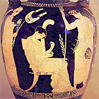 |
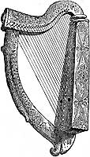 |
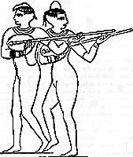 |
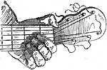 |
But the most noticeable distinction between ancient and modern
harps seems to be the almost universal absence of a third side to the wooden
framework of the former.
This will be easily observed by glancing at the various illustrations of harps
which have been and which will be given.
This third side forms a very important feature in more modem instruments, and
not only adds to the strength of the instrument, but also allows the strings to
be drawn to a greater tension than could otherwise be the case.
In fact, it seems difficult to believe how the woodwork, when consisting only
of two sides, could stand the strain upon it when the strings were tuned.
To those who have not given attention to the subject, this tension seems almost
incredible. In the case of a grand pianoforte, which contains more strings than
any other instrument in use, the tension, it is calculated, is fifteen or
sixteen tons.
[To the kindness of Mr. G. T. Rose, of Messrs. Broadwood,
I am indebted for the fact that when two pianofortes exhibited by that eminent
firm in the Exhibition of 1862 were tested with reference to this point, the
tension of one was 15 tons 9 cwt., of the other 16 tons 11cwt., both being
tuned to concert pitch.
The greater weight representing the tension of the latter instrument is
accounted for by its being of a rather larger size;
of two strings, equal in other dimensions, but differing in length, the longer
will of course require a greater weight than the shorter, in order to raise it
to the same pitch.]
The third side of a harp is far from spoiling its appearance.
The harp shown in Fig.20
is an ancient Irish harp.
One preserved in
But this tradition has been ably controverted.
[See Stoke's Life of Dr. Petrie, p. 318.]
The illustration which we give here was taken, by the kind permission of the
authorities of the
page^
|
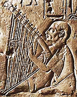 |
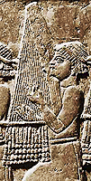 |
The word nebel is by some traced
to a root signifying a "rounded vase," or "leather
bottle."
If this derivation be correct,
we can imagine that the instrument was conspicuous for the shape of one of its
sides, if it had two sides;
or if it were curvilinear, from the form of the hollow framework.
It is quite possible that it might have been like those delineated in Figs.23, 24 and 25.
But it is nearly always dangerous to argue from
the derivation of names of instruments.
For instance, what could the musical historian of a thousand years hence gather
of the construction of a harmonium, seraphine,
accordion, or euphonium, from the derivation of their respective names?
or, how much from the word "pianoforte," the
"soft-loud !"
Some have carried this misguiding principle so far as to say that because nebel was derived from "rounded vase" or
"leather bottle," that it would therefore answer the description of a
bagpipe !
This is, at least, an ingenious theory, but fortunately a well-defined title is
given to the bagpipe (on the subject of which more will be said by-and-by),
namely, symphonia, which renders this
suggestion unworthy of consideration.
This is not the only theory as to the nature of
a nebel which has been hazarded.
Although it seems almost certain that it was a harp, some have suggested that
it was a, kind of guitar.
But there is one very strong argument against this assumption that the nebel belonged to the family of guitars;
it is this, that whereas the nebel is not unfrequently mentioned in Roman and Greek authors, instruments
with long necks seem to have been unknown to them, or at most, to have been
only known to them through actual specimens, or representations of them in
sculpture, which had been captured and carried home.
[The kithara of the Greeks, it
should be remembered, was in its construction a small lyre, not a
guitar, although its name is so closely allied to that of the latter.]
But there is indisputable proof that the Egyptians possessed such instruments,
and Fig. 21 shows two women dancing to their own performance
on such long-necked guitars.
[This illustration is copied from an
original sketch taken near
The "necks" seem disproportionately
long in these resonance-boxes.
But if Italian instruments of this class, the lutes of the sixteenth and
seventeenth centuries, be examined, it will be found that this relative
proportion is not uncommon.
The great importance of these Egyptian lutes or guitars, with reference to the
progress of the science as well as the art of music, must be our excuse for a
slight digression.
It must have been known to the players on these ancient instruments that their
fingers had always to squeeze down or "stop" the strings at some
definite place, in order to produce certain intervals.
[See also the account of the Tamboura, in Engel's Music of the most Ancient Nations,
pp. 52—57.]
These distances were no doubt measured, and compared with each other, and with
the whole length of the string.
Thus indeed would the first foundation of the science of acoustics be laid,
with all its interesting and important bearing on the art of music.
And, in order that the choice of the position of the finger should be found by
the performer with greater certainty, frets were invented.
Frets were originally pieces of gut (in the Egyptian instruments of camel-gut),
tied round the neck, and so forming ridges on the finger-board, at those
places where the pressure of the fingers would cut off so much of the strings
as should allow the vibrating portions to produce the successive notes of the
scale.
Thus, no doubt, the primary object of using frets was, to secure a true
production of the scale then in use, and at the same time, to shorten and
simplify the labour of the young student.
But they had, later in their history, when made of ebony or ivory, another
important function.
If the fingers of a grown man be placed side by side on the strings of a
guitar, it will usually happen that they cover more space than the strings, or
in other words, that there is not room for them in a straight line, each finger
on a string.
But the ridge made by a fret enables the performer to draw his fingers a little
behind each other and yet play such a chord in tune.
This will be understood by noticing the position of the tips of the fingers in Fig. 22.
Mr. Chappell states [History of
Music, p. 44.] that the remains
of frets were distinctly visible on some instruments found in an Egyptian tomb.
With regard to the possible relation of the kinnor
to these
long-necked instruments, it may unhesitatingly be said that it was probably
less long in the neck, but having a somewhat larger resonance-box.
The portability of the kinnor, to which
its lengthened existence was greatly due, would certainly militate against the
idea of its being constructed with three or four feet of fragile neck.
Assuming, then, that these interesting instruments were not identical with the kinnor, nor the nebel, in the former case because of their
fragile form, in the latter because they were unknown to nations who were
familiar with the nebel, we are led to
the conclusion that the nebel itself was the
veritable harp of the Hebrews.
It could not have been large, because, as will be noticed hereafter, it is so
frequently mentioned in the Bible as being carried in processions.
The Egyptians and Assyrians had harps of
moderate size, as shown in Figs.23, 24, and 25.
Very probably the nebel
had a form similar to the harp in Fig.24, but
with a somewhat more rapid curve.
It would in this way be rendered more portable.
Before noticing some of the most important
passages in the Bible in which nebels are
mentioned, it is necessary to point out that the English translators render nebel (apparently without any special reason) by no
less than four different words:
The first of these is by far the most common in
the authorised version, and is no doubt the most
correct translation if the word be understood in its true sense as a portable
harp.
Nebels,
like kinnors, were made of fir-wood,
and afterwards of almug.
[Almug, or algum,
perhaps the red sandal-wood of
See Plants of the Bible, by Sir Joseph Hooker.
(Spottiswoode's Sunday School
Teachers' Bible.)]
Samuel told the newly-anointed king Saul that he would meet
a company of prophets coming down from the high
place with a nebel
and other musical instruments. And afterwards
David and all the
house of
even on kinnors and on nebels, &c.
On the happy event of the fetching of the ark
from Kirjath-jearim,
David and all
on kinnors, nebels, and timbrels.
In i
Chron.xv. the names of the players on nebels are carefully recorded.
It is evident that David himself was as proficient on the nebel
as on the kinnor, and that he set aside
special players for special instruments (i
Chron.xxv.1, &c.).
In the Book of Psalms frequent mention is made of the nebel
(Ps.xxxiii.2;
Ivii.8; Ixxi.22; Ixxxi.2; xcii.3; cviii.2; cxliv.9; cl.3).
It was not restricted in its use to religious ceremonies:
Isaiah complains,
The kinnor, and the nebel, [Here
translated viol. ]
the tabret,
and pipe,
are in their feasts (Isa.v.12);
and similarly Amos writes,
Take thou away from
me the noise of thy song;
for I will not hear the melody of thy nebels (Amos v.23),
and he prophesies woe on those that
lie on beds of ivory, …
eat lambs out of the flock, …
drink wine in bowls,
and …
chant to the sounds of the nebel. [Here translated viol ]
(Amos vi.5.)
In old English translations of Ps.Ixxxi.2 the nebel is called a "viol."
But it must be understood that in these passages the translators used the word
carelessly, and not in the least wishing to suggest that the Hebrews had an
instrument commonly played with a bow.
It is remarkable that the nebel
is frequently mentioned in conjunction with some other musical instrument:
for instance, with the toph (tambour), shophar (trumpet), &c.
It may not be unfair to argue from this that its tones were deep and heavy, and
were best adapted to form the groundwork of other combinations of various
qualities and pitch.
|
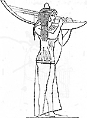 |
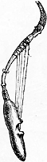 |
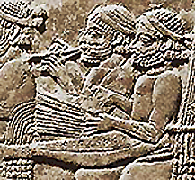 |
The instrument shown in Fig. 26
seems to have been the link between the harp and guitar family,
and as such is interesting.
The negro harp, or nanga (Fig. 27),
is probably of great antiquity,
and to this day retains its original form,
midway between a harp and guitar.
This remarkable instrument seems almost to
suggest that all string-instruments may have been evolved from one type,
namely, strings stretched across a bent stick, as originally suggested to our
earliest forefathers by their hunting-bows.
But of this we shall speak later on.
page^
A very peculiar form of small
harp is shown in Fig.28;
which is copied from an Assyrian stone in the
Carl Engel, whose opinions are nearly always most trustworthy, seems in this
case to have somewhat ventured on a mere speculation when he names this the azor, a word about which we shall next
speak.
The plectrum in the player's right hand is very evident;
and also the curious termination of one of the sides in the form of a hand,
perhaps used for holding the music, as is a small brass lyre or other
contrivance in our modern military instruments.
With nebel is
often associated the word azor, which
is traced to a root signifying ten, and which has therefore been
rendered in the Septuagint by ἐν δεκαχόρδῳ
or as ψαλτήριον
δεκάχορδον (psalterium
decem chordarum, or, in
dechachordo psalterio
in the Vulgate). In the Chaldee, Syriac,
and Arabic versions also are found words implying the existence of ten strings
in the nebel-azor.
The word azor
may therefore be considered as qualifying or describing the special kind of nebel to be used, much in the same way as we now
speak of a trichord pianoforte.
It is in our English version always rendered by the words
"ten-stringed."
In Ps.cxliv.9 the associated word nebel is
wrongly translated !ute
instead of harp, in the Prayer-book version.
page^
該詞同古亞述文halalu，原意為"管子" ，其動詞為"穿孔" ，或指管子的中空，或指在管子上開孔。《舊約》之後的詮釋文獻《塔木德》（西元五世紀）在論及該樂器時有雲：用手指或手掌"擊孔" 。又據該文獻之一部《密西拿》（西元二世紀），這種樂器聲音尖銳，有穿透力，可傳至好遠處。
HALIL僅出現5次，出現的場合分別為：先知樂隊中一種樂器，能令人發狂而"受感"（《撒母耳記上》10:5）；所羅門登基時，人們歡呼吹笛，希望和平與繁榮（《列王記上》1:40）；宴席樂隊中一種樂器，為娛樂助興生輝（《以賽亞書》5:12）；山間行路時吹笛娛樂、狂歡（同前30:29）；作為哀歌"哀鳴如簫"（《耶利米書》48:36）。由上述可得出：這既是一種神秘的樂器，又是民間娛樂的樂器。
如同其他民族的同類樂器，HALIL的管狀有男性生殖器的象徵意義，以及對生殖繁育的魔力（《民俗、神話與傳說標準辭典》1984年紐約版），故在聖殿儀式中其使用有限制。第一聖殿時期（公前970—586年）根本不用；第二聖殿時期（元前516—西元570年）是否使用，在《舊約》中亦無記載。根據後來記載第二聖殿時期儀禮的權威文獻《密西拿》可知，HALIL的使用只限於一年中的十二天節日，"以增加歡樂氣氛" ，而且使用數量一般僅限於兩支（最多不超過12支）。至於平時聖殿儀禮中幾乎不用這種樂器。
據薩克斯認為，flute類的樂器（橫笛）在元前1000年的中東尚無記載與發現（到了古羅馬時代也僅有少量的，真正較多出現，是在10—11世紀的事。——筆者注），若用flute去套HAIL是一種時代錯誤。整個古代世界的吹管樂器都是如同希臘人的aulos那樣的"雙管"（《樂器史》）。而希臘本所用的也正是這個術語。拉丁本所用的tibia（原意：脛骨），亦是當時羅馬的一種骨制雙管樂器。欽定本的pipe是管類樂器總稱，沒有表明上述特點。
建議英文譯作double pipe，中文相應作"雙管" 。這樣比修訂標準本的flute、和合本的"笛"要準確，也比薩克斯的double oboe為好，因oboe令人想起"雙簧" ，而這證據尚不充分，不宜定死。
PART II. Chapter 5.
HOME | contents | Kalil- an oboe?
| reed pipes | flutes | machol | mahalath | page^THE universal usage of musical instruments of this
class renders it difficult to reduce an account of them to reasonable limits.
It will be well to state at once that in all probability the word pipe—
the αὐλός of the Greeks, the tibia of the Romans—
included two important divisions of modern instruments:
namely, reed instruments, such as the oboe or clarinet;
or simple flue pipes, such as the flute.
That this must have been the case is evident from the fact, that while there is
unquestionable evidence that many ancient instruments had reeds, no special
name is set apart for them as opposed to open tubes without reeds.
The very existence of the word γλωσσόκομον
(tongue-box)
[This word, it will be remembered, is used in St. John xii.6 and xiii.29, where
it is translated hag ;
but it is quite possible that Judas Iscariot carried the money in a
"reed-box," as implied by the Greek text.]
shows that the player was accustomed to carry his tongues or reeds separately
from his instrument, just as our modern oboists and clarinettists
do.
It must also be borne in mind that both oboe and clarinet are children of one
parent, and did not become distinct classes until the early part of the last
century, the parent name being chalumeau, from the
Latin calamus, Greek κάλαμος, a cane or reed.
But when chalumeau is translated "a reed-pipe," it must not be
forgotten that the term is applied to the material of which the pipe is made (a
cane), and not, as we always apply the term now, to a pipe containing a reed or
tongue.
Hence it will be seen that we are no nearer the discovery of distinctive names
for these two classes of instruments, even when their parent stock is found. It
may be worth mentioning that the real difference between an oboe and a clarinet
is, that the former has a double tongue which vibrates, the latter a single
tongue.
page^
The derivations of some of the ancient names of
flutes are very interesting:
khalil or hahil,
from a root signifying "pierced" or "bored"; tibia
(Lat.), from the fact that it was often made of a shin-bone;
aulos (αὐλός), from
the root ἄω, αὔω, "to blow," exactly corresponding to our flute,
from the Lat. flo, "to blow,"
as also flageolet, from flatus ;
calamus
(κάλαμος), chalumeau, from the material, just as
the Arabian flute is called nay, "a reed," of which the Arabs
have as many as ten varieties;
there was also a small Phoenician flute called gingra
(γύγγρα), which is probably connected with Sanskrit gri, "to sound."
Was the khalil
a flute or oboe?
Probably the latter.
There is evidence from many sources that the Hebrews had oboes (see Lightfoot,
who speaks, in his
Jahn thinks it probable that they were very similar
to the zamr of the Arabs, of which there are
three kinds, not differing essentially from each other, but only in size and
pitch, the largest being called zamr-al-kebyr
;
the middle sized, as being most commonly used, zamr
; and the smallest zamr-el-soghayr.
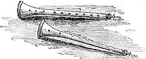
Fig. 46 shows two of these.Of the pipes without reeds, like our flutes,
there always have been two kinds:
one played by blowing in one end, hence held straight in front of the
performer; the other played by blowing in a hole in the side, hence held
sideways.
The former was called the flute a bee, that is, the flute with a beak;
the latter, flauto traverse, that is,
the oblique flute, or flute played crossways.
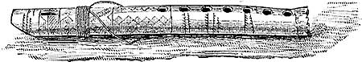
Fig.
47 is an illustration of a flute
a bee in possession of the author, which was brought from
It was carried by a Mahometan
pilgrim, who vowed that he valued it more than anything he owned, but he was
very willing to part with it at the sight of a small sum of money.
It is of cane, and is rudely ornamented with simple patterns.
It seems closely allied to the soujfarah of
the Arabs.
Fig. 48.
The next illustration (Fig. 48) shows an ancient Egyptian flaitto
traverse ox piffera di canna (reed-flute), as it is described, in the museum
at
These instruments seem, judging from the
specimens found in Egyptian sculpture or frescoes, to have been of various
lengths, sometimes far exceeding the size of the flute commonly used in our
orchestras.
This goes to prove that this nation was wise enough to make use of a family of
flutes, just as we use a family of viols.
And there are many musicians who think that we lose much by thus excluding
flutes of deep sonority.
Within the last few years an attempt has been made to revive these instruments,
a concert having been given in
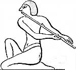
Fig. 49 represents an Egyptian playing on one of these oblique flutes.It must not be supposed that such improvements
have been rapidly created.
They are of our own time, invented by Gordon, perfected by the ingenious Boehm.
It is strange that this oblique flute should have been of comparatively late
revival in
All who have seen copies of the music of the last century must have observed
how particular writers were to call it the German flute, as if forsooth
it had not been one of the chief elements of sweet music many thousand years
previously!
So often does it happen that mankind strives unwittingly after a supposed
novelty, unaware that the same steps have been trodden before, the same results
long since achieved.
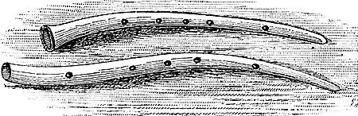
Two ancient Greek flutes, found in a tomb, are preserved in theIt is remarkable that flutes of the exact shape of these are not
to be found on any known monument.
Is it possible that sculptors were tempted to mould, if not an ideal form of
instrument, one not of the commonest kind?
But be this as it may, the curved form of such instruments was
very common in the Middle Ages.
The cornetto airvo
of the Italians seems to have been used in all European countries under
different names.
Two very beautiful instruments of this kind and shape were discovered in the
cathedral of
They were probably in use in the sixteenth or beginning of the seventeenth
century.
Like most cornetti curvi,
they are made of wood, covered with black leather, but so admirable is the
workmanship that a casual glance would lead any one to believe them to be of
black wood.
They have the usual number of holes, six above and one below, and are elegantly
mounted in silver, on which are engraved the arms of the college.
They doubtless were the chief support of the treble part, at funerals or any
ceremonies where it was necessary to have a musical procession.
In
They were played with reeds, probably of the oboe or double kind.
So, too, were these ancient Greek flutes (Fig. 50) reed instruments, but Fetis is of opinion that they had single tongues, like our
clarinet, only he is inclined to think that the tongue was of metal, not of
wood, because in a certain account given of a trial of musical skill, one
player was unable to compete because the reed of his instrument was bent.
But it is probably assuming too much to say that such an accident could not
have happened to a wooden tongue, and that, therefore, brass was the material
of which it was made.
One thing however is certain, and that is, that in the earliest forms of calamus the reed would naturally be of cane, because
it would be simply formed by an incision in the surface of the cane itself,
similar to that made by boys in a piece of straw, when constructing that toy
instrument dignified by pastoral poets by the name of "oaten pipe."
It is remarkable that flauto traverso, or oblique flute, as shown in the Egyptian
drawing (Fig. 49), is not
to be found on any Assyrian or Chaldean
monuments.
If then the Jews used it, they must have adopted it from
The khalil seems to have been used by the Jews
on very similar occasions to those at which our ancient oboes played an
important part, most often during seasons of pleasure, but sometimes also at
funerals.
Two pipes at least had to be played at the death of a wife.
The pipers, it will be remembered, were bidden to "give place" by our
Lord, when He said,
The maid is not dead, but sleepeth
(Matt.ix.24).
One common use of the khalil was
as an amusement and recreation when walking or travelling.
The solitary shepherd would cheerily pipe as he traced out his long hill-side
walks, and the path of the caravan could be traced by the shrill echoes ever
and anon tossed from side to side as, at each new turn in its many windings,
frowning rocks beat back the piercing sounds.
Especially such was the case when thousands of persons were making those
periodical journeys to
Ye shall
have a song,
as in the night when a holy solemnity is kept;
and gladness of heart,
as when one goeth with a pipe (khalil)
to come into the mountain of the Lord,
to the mighty One of Israel.
(Isa.xxx.29).
The joy of the people when the cry "God save king Solomon!" promised a peaceful and
prosperous reign, was shown by their music:
the
people piped with pipes,
and rejoiced with great joy,
so that the earth rent with the sound of them.
(i Kings i.40).
The khalil is not so often
mentioned in connection with the outpouring of prophetic gifts as instruments
of the harp class;
but yet when Samuel was describing to Saul how he should meet a company of
prophets on his way to Gilgal, he described them as
coming
down from the high place with a psaltery (nebel),
and a tabret (toph),
and a pipe (khalil),
and a harp (kinnot)
before them
(i Sam.x.5).
But these instruments were elsewhere to be met with than at the
solemn processions of holy men, for the prophet Isaiah, in denouncing the
drunkards who "rise up early in the morning to follow strong
drink," describes their wine feasts as being enlivened by the
sounds of the iiebel, kinnor,
toph, and khalil
(Isa.v.12).
The prophet Jeremiah, in showing the utter desolation and destruction of
I will
cause to cease in
Therefore mine heart shall sound for
There shall be lamentation generally upon all the house-tops of
for I have broken
saith the Lord. (Jer.xlviii.35, 36, 38).
Could any words describe more
touchingly than these the degradation and loss of moral life which should
overtake
That it should be wept over as one dead, piped over as a corpse!
There is no direct evidence as to whether the Hebrews used the double-flute.
It is quite certain they must liave been aware of its
existence, because it was known to Phoenicians, Assyrians, Egyptians, and Chaldees before it found its way into
So common is it in Roman and Greek sculpture and pottery, that all are familiar
with its forms.
The word nechiloth is understood by Jahn and Saalchiitz to mean the
double-flute, but, on the other hand, many others consider nechiloth
to be the collective term for wind instruments.
Some consider that nekeb, which is
derived from a root signifying "hollow," stands for the double-flute;
but this word probably signifies the hollow place in which a gem is set
[The close of Ezek.xxviii.13 should therefore be "the
workmanship of the jewels, and the setting of the stones"
(not "of thy tabrets and of thy
pipes").].
The two tubes forming the double-flute were called oddly enough male and
female, but more commonly right and left (dextra
and sinistra).
The former appellation, no doubt, refers to the fact that one tube produces a
deep note, which served as a drone or bourdon, while on the other
was played the tune.
The difference in the pitch might easily have given rise to the comparison
implied between the two names.
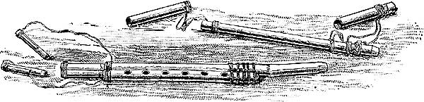
Such double-pipes are actually in use among the present
inhabitants of
Two specimens, in the possession of the writer, are shown
in Figs. 51 and 52.
That in the latter illustration has three loose pieces, which may
be added at pleasure to the "drone" tube of the instrument for the
purpose of adjusting it to the key of the tune to be played.
That in the former has two similarly constructed pipes, so that a simple melody
may be performed in two parts, much in the same way as on the double-flageolet,
which at one time was somewhat popular in
Both examples are of the simplest construction.
The material of which they are made (including the mouthpieces and tongues) is
of river-reed, cut into lengths, which have to be inserted into each other
before use.
To prevent accidental loss, the separate parts are connected by common waxed
cord.
These instruments are called arghool,
and have distinguishing titles, according to the length of the drone-tube.
|
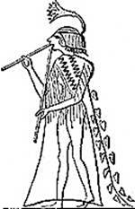 |
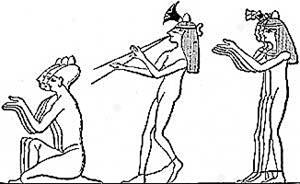 |
In Fig. 53
the inequality in the length of the two pipes is very apparent.
Fig. 54
shows that they were sometimes used in Egyptian processions of a solemn
character.
In Fig. 55
is shown the capistrum, which Greeks
and Romans wore to give support to muscles of the cheeks and face whilst
blowing.
In modern orchestras we are perfectly content with the quantity of tone
produced from our tube-instruments without the assistance of these
head-bandages.
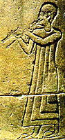
An Assyrian is shown playing upon the double-flute in Fig. 56.The use of the double-flute by nations with whom
the Jews had constant intercourse having been shown, nothing more can be said.
The reader must form his own opinion as to the probability of its being rightly
enrolled amongst Hebrew musical instruments.
The quality of tone produced by the reed-pipes was, probably, very coarse and
shrill.
Particular pains have been taken by modem instrument-makers to produce
delicate-sounding oboes, clarinets, &c.
And with regard to the open pipes, or flutes, of the ancients, it should be
borne in mind that it must have been most difficult to produce a series of
sounds, either similar in timbre or perfectly true in pitch, without the
aid of keys.
Up to the last century, certain holes in the
then existing flutes had to be only partially covered by the fingers in order
to produce certain notes in turn.
We must learn from this, not to place much confidence in conclusions drawn from
actual experiments on old pipes.
Suppose, for instance, it were attempted to discover the series of scale-sounds
of such an instrument by placing it in the hands of a modern performer, it
would be impossible to say whether any noticeable variations from known forms
of the scale ought to be attributed to the intentional design of the instrument
itself, or to our loss of those traditions which influenced its use.
But we may have to say something about the musical scales of the ancients when
speaking further on of the vocal music of the Hebrews.
page^
This word is found in several passages of Holy
Scripture associated with the toph or timbrel.
In the Authorised Version it is almost always
rendered by "dances" or "dancing:"—
And Miriam the
prophetess, the sister of Aaron, took a timbrel in
her hand;
and all the women went out after her with timbrels
and with dances. (Exod.xv.20);
and again,
Jephthah came to Mizpeh unto
his house,
and, behold, his daughter came out to meet him with timbrels
and with dames. (Judges xi.34).
In thus rendering machol,
our translators have simply followed the Septuagint, in which the
corresponding expression is έν τυμπάωοις καὶ χοροῖς; the same too in the Vulgate, "cum tympanis
et choris."
The German, like our own version, follows the Septuagint— "mit Pauken und Reigen,"
that is, "with drums and
chain-dances," dances with
linked hands.
Although in modern German orchestral scores panken
signifies "kettledrums,"
it must not be supposed that more is here meant than a common timbrel.
That dances took place on these and many other occasions in which timbrels were used there can be no doubt.
But may not machol signify a small flute?
If so, the expression with toph and machol would exactly correspond to our old English pipe
and tabor, to the sounds of which instruments many a rustic dance was
merrily footed.
They are still the common accompaniment of village festivities in many parts of
In some of the Pyrenean districts may be seen gathered on the green, round
which their homesteads are clustered, the gaily attired villagers dancing to
the sounds of a pipe which the seated musician plays with his left hand, while
with his right hand he beats a sort of tambour, consisting of six strings
stretched across a resonance-box, which rests upon his knees.
The arguments in favour
of the theory that machol is a flute are
founded on the fact that many authors, amongst them Pfeifer, consider the word
itself to be derived from the same root as khalil,
signifying, as before mentioned, "bored through;"
and also that in the Syriac version the word is
translated by rephaah, which is the
name of a flute still to be found in Syria.
On the other hand, some authors have traced khalil
to a root hhalal, "to dance,"
and, of course, if this be a correct derivation, machol
would more naturally signify a dance than a flute.
Saalchiitz is of opinion that it implies a
combination of music, poetry, and dancing, and is not the name of any special
musical instrument.
Much can be said in favour of this view.
We have words in our own language which have a very similar meaning;
for instance, roundelay, which may be taken as a song, a dance, or a
piece of poetry.
But there seems to be but little necessity for forcing such a mixed meaning
from the word machol.
To say that on a joyous occasion men or women went forth with "pipe and tabret," is enough to imply that they danced;
and therefore, if our translators would have more properly rendered machol by a "pipe," they have nonetheless
conveyed the real sense of the context by rendering it
"dancing."
But by assuming the former of these interpretations much force is given to that
beautiful passage in the Book of Lamentations (v.15);
The joy of our heart is ceased;
our pipe is turned into mourning.
The Psalmist in his joy uses just the converse
of this expression,
in Ps.xxx.11:
Thou hast turned for
me my mourning into dancing (machol) :
thou hast put off my sackcloth,
and girded me with gladness.
So does the prophet, joying
over the restoration of
The only other passage in which the Psalmist uses the word is in Ps.cl.4:
Praise him with the timbrel and dance.
It was the noise of the pipe and tabret which Moses heard as he descended the holy mount to
find the people, whom Jehovah had but just highly honoured
by the giving of the Law, dancing round a golden calf.
We may, then, for two reasons believe the machol
to have been a flute used specially for dancing:
first, because it is highly probable that an instrument was used in conjunction
with the tabret;
and next, because such a supposition does not exclude the idea of dancing, and
in no case seems to do violence to the text.
page^
A word allied both to khalil
and machol occurs in the title of two Psalms (liii. and Ixxxviii.), the former
being inscribed to the "chief musician upon Mahalath,"
the latter to the "chief musician upon Mahalath Leannoth."
Each of these is called also a "Maschil," a
title generally thought to designate a poem of a moral or typical import.
Sing ye a maschil with the understanding,
sings the Psalmist in Ps.xlvii.7.
Many learned writers trace mahalath to the
same root as khalil "perforated,"
"bored").
If a musical direction, then, this word clearly points out the class of
instruments which is to accompany the singers of the psalm—namely, khalil.
The addition leannoth, from the fact
that it means "to answer," most probably is a special order for an
antiphonal treatment.
E.維爾納認為KEREN是該類樂器的原型，SHOFAR只是其用於宗教儀禮時的一種變型（"猶太音樂" ，《新格羅夫》卷九）。KEREN僅出現三次：《利未記》23:24，《約書亞記》6:4—13，《但以理書》3:5。在前兩例與SHOFAR交替出現，後一例與一些源於希臘的樂器並置、且用亞蘭文拼寫QARNA，有種異國情調（詳述見本文最後部分）。
SHOFAR用公山羊角製成。後來《塔木德》對材料作了嚴格規定，一般應用公山羊角，但野山羊角亦可，而絕對禁用牛角這類材料。這種樂器的音色可從該詞詞根原意得知，即"明亮的" ，指輝煌、有穿透力的音色。但因其僅能吹出幾個音，且音高不准，故常不當作樂器，僅作為信號工具。可是SHOFAR卻是古猶太樂器中唯一留存至今的。現仍用於猶太會堂中。
SHOFAR是《舊約》中出現最多的樂器，共計72次。
據傳說，閃族人有一個基本思想："尤其是SHOFAR的力量（《古代近東音樂》）。因而它廣泛用於戰爭、節日及聖典之中，如：聚眾、攻城、衝鋒、警戒、登基、請櫃、頌主、獻祭、警告、竣工、驅邪、安息日、贖罪日、除酵節、月朔並月望等。其中用於月朔，即猶太新年儀式，還有其象徵意義，是因SHOFAR形狀如新月的緣故。
該樂器宗教意味特別強，在它那威嚴、響亮、漸高的長音中，上帝降臨於西乃山（《出埃及記》19－20）。它不但是聖殿儀禮中祭司的樂器，也是先知預言上帝"最後審判"的信號，同每年猶太新年與贖罪日之間的懺悔日有關。因而它是聖器，平時要珍藏起來、不讓人見。它還有性的禁忌，規定女性禁用，且須避之。
希臘本的Salpinx譯得不准，因這種希臘樂器是直管的，應是種trumpet（號），與彎管的SHOFAR形狀不符。Keras、keratine與KEREN則是同源詞。拉丁本的tuba也不對，因tuba也是直管號；而cornu這種羅馬樂器又是彎成G形的，只有彎管的bucina外形與之最接近。欽定本、修訂標準本均譯作trumpet，僅個別地方譯作horn（欽定本《歷代志上》25；修訂本《約書亞記》6:5，《撒母耳記下》6:15）。KEREN英文應定為horn，而SHOFAR英文應為ram's horn羊角號）以示區別。和合本所譯"角"是正確的。中文也可作"號角" 。
HOME |
Contents
| keren,
shophar, katsotsrah | horns
| trumpets
| page^
THESE are
the names of the three important Hebrew trumpets.
The first, evidently, either actually was, or at least originated from, that
most ancient of wind instruments, the horn of an animal. Keren
and shophar are sometimes used synonymously,
notably so in the account of the capture of
But in this same account there is affixed to keren
the word jobel, making the whole a
"jobel-horn."
Although this is translated "ram's horn" in our version, and although
it has been suggested that jobel in
Arabic, if not in Hebrew, might signify a ram, yet on the whole it seems
probable that jobel is the source of our word jubilee,
and that the expression simply points to the fact that the instrument was used
on great solemnities, and was a jubilee-trumpet (τοῦ ἰμβήλ).
page^
The actual horns of animals were in very early times imitated in metal or
ivory.
In the latter case a tusk was hollowed out and often elaborately carved.
They were called in the Middle Ages oliphants, or elephant-trumpets, from their
material.
The Ashantees to this day use tusks for this purpose,
only, strangely enough, the instrument is blown at a hole in the side (like flauto traverse ), and not at the small
end.
In i Chron.xxv.5, after giving a list of those set
aside by David to play upon the keren,
the historian says,
All these were the sons of Heman,
the king's seer in the words of God,
to lift up the horn.
Again, translated in our version by "cornet" (though in
the Septuagint by σάλπυγξ), the word
occurs in Dan.iii.5, &c.
Only in these passages is mention made of the keren as a musical instrument, although the word
often occurs with other meanings, and is frequently used as figurative of
"strength."
In Fig. 73
are shown various forms of the keren.
The shophar, judging from
its very frequent mention, extending in the pages of the Bible from the Book of
Exodus to that of Zechariah, must have been more commonly used than the keren.
It was the voice of a shophar,
exceeding loud, issuing from the thick cloud on Sinai, when, too, thunders and lightnings rolled around the holy mount, which made all in
the camp tremble.
When Ehud's personal daring had rid
Gideon used the instrument,
and Saul also (i Sam.xiii.3),
and many other of
to rouse and call up the people against their enemies.
But it was not confined to military use,
for
David and all the house of
(2
Sam.vi.15).
It is mentioned three times in the Psalms:
God is gone up with a merry
noise,
and the Lord with the sound of the shophar
(Ps. xlvii. 5);
Blow up the shophar in
the new moon
(Ixxxi.3);
Praise Him in the sound of the shophar
(cl. 3).
The shophar is especially
interesting to us as being the only Hebrew instrument whose use on certain
solemn occasions seems to be retained to this day.
Engel, with his usual trustworthy research, has traced out and examined some of
these in modern synagogues.
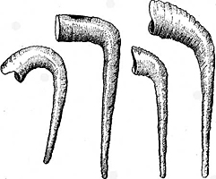
That shown in Fig. 74 is from the synagogue of Spanish and Portuguese Jews, Bevis Marks, and is, he says, one foot in length.On these instruments signals or nourishes are on certain occasions
played, the music of which it is unnecessary to give, as they are well known as
the simplest progressions which such tubes are capable of producing.
All such tube-instruments can only give a series of sounds called natural
harmonics or overtones, which are produced in their special case by forcing
(by gradually increasing the pressure of air from the lips) the column of air
they contain, into two vibrating parts;
then three, four, five, six, and so on.
page^
Here is the series of notes which can be produced by a trumpet in
C.
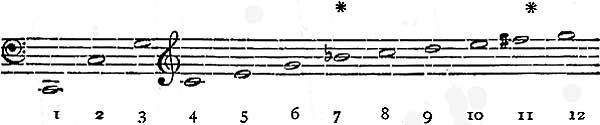
The notes marked * are not in tune with the sounds thus ordinarily
represented, and are not therefore used, except among barbarous nations,
although they can be sometimes heard in a Ranz
des vaches or Kühreihen
among the Alps.
The relation of the intervals of this series remains unaltered for
all open tubes, only the pitch can vary; thus a trumpet in D would give
D, D, A, D, F#, &c. The ordinary orchestral trumpet has the
means of making the note No. 11 either truly natural or truly sharp.
The series of sounds given above (varying in pitch, not in
relation) was therefore the actual scale of the Keren,
Shophar, and Khatsotsrah.
When a tube-instrument is required, on which a chromatic series of sounds can be played, pistons must be used as in our modern cornets, or slides as in our trombones.
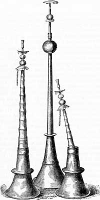
Tubes with slides are more ancient than generally supposed.
Fig. 78 shows
Chinese instruments of this class.
The khatsotsrah is generally
thought to have been a straight trumpet, with a bell or "pavilion,"
as it is termed.
Moses received specific directions as to making them.
Make thee two trumpets of silver;
of a whole piece shalt thou make them:
that thou mayest use them for the calling of the
assembly,
and for the journeying of the camps.
In Ps.xcviii.6 the khatsotsrah
and shophar are brought into juxtaposition :
With khatsotsrah
and sound of shophar
make a joyful noise before the Lord the King,
or, as it incorrectly stands in the
Prayer-book version,
With trumpets also and shawms,
&c
[The word shawm is a corruption of
chalumeau, and signified a primitive clarinet or oboe.].
In this passage the Septuagint has it, Ἐν σάλπιγξιν ἐλαταῖς,
και φωνῃ σάλπιγγος κερατίνης,
With ductile trumpets, and the sound of horn-trumpets.
So, too, the Vulgate: "In tubis ductilibus et voce tubas corneae."
The word mikshah, which is applied to
the description of the khatsotsrah in Numb.x.2, which means
"rounded" or "turned," may either apply to a complete twist
in the tube of the instrument, or, what is more probable, to the rounded
outline of the tell.
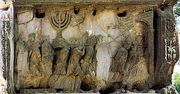
it would make it more like a trombone,
and similar in form to that depicted on the Arch of Titus.
But, on the other hand, the account given by Josephus points out
the latter characteristic of shape.
He says, "Moses invented a kind of trumpet of silver;
in length it was little less than a cubit, and it was somewhat thicker than a
pipe; its opening was oblong, so as to permit blowing on it with the mouth;
at the lower end it had the form of a bell, like a horn."
It seems chiefly to have been brought into use in the Hebrew ritual, but was
also occasionally a battle-call, and blown on other warlike occasions.
It was the sound of the khatsotsrah'
which made the guilty Athaliah tremble for her safety
and rend her clothes, crying, "Treason! treason!"
Silver trumpets have always been associated with dignity and grandeur, whether
blown before a pope in the ritual of the magnificent St. Peter's,
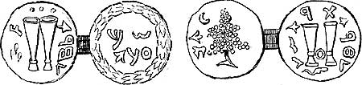
In Figs. 79 and 80 two coins are shown,|
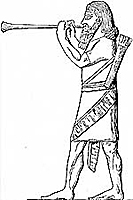 |
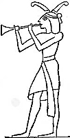 |
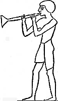 |
The Assyrians appear to have used trumpets,
as Fig. 81 plainly
shows;
but there are at present no records of their having trumpets with a bell mouth.
Figs. 82 and 83
prove, however, that such terminations to tubes were not unknown to the
Egyptians.
The Romans had at least three varieties of trumpet, the most powerful of which
was called tuba.
It was used as a war-trumpet.
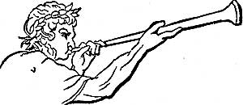
Fig. 84, from a bas-relief in the Capitol, exhibits a Roman blowing a trumpet at the triumph of Marcus Aurelius.This difficulty is overcome in modern tube-instruments, not having
slides or pistons (as, for instance, the simple French Horn
or Trumpet)
by changing the crook, and so lengthening the tube or shortening it, as
to adjust it to a required pitch.
The verse of the Psalms before quoted (xcviii.6) is the only one
in which mention of the khatsotsrah is made by
the Psalmist.
The first allusion to this instrument in Holy Scripture is where Moses is commanded
to make two of silver (Numb.x.2);
the last in Hos.v.8, where it is used in connection with the shophar, and both instruments are to be blown
as a warning to wicked
page^
據考古發現，這種樂器形狀是筆直的，不象SHOFAR是彎曲的。它用銀子錘出，且成雙使用（《民數記》10:1、2）。用銀子作材料，有尊嚴、崇高之聯想。成雙則是一種古老的平衡觀念。在《民數記》10:3—10中有關於這種樂器作為信號吹奏的規範，如：輕聲吹以聚眾；單吹一支聚集首領；吹出大聲，東營起行；二次吹出大聲，南營起行；與敵打仗，吹出大聲；節期與獻祭，也要吹號。
該樂器共出現29次，除上述場合外，尚有請櫃、頌主、竣工、登基、戰爭等。它也是一種聖殿樂器，在所羅門時代規定由120位祭司吹奏（《歷代志下》5:12）。
根據希臘本的Salpinx和拉丁本的tuba （均是直管號），可知英文應是trumpet。但欽定本有一處錯譯作cornet（《歷代志下》15:14），那是中世紀一種木管號。修訂標準本中該樂器有四處與SHOFAR並置，這時HATZOTZERAH稱為horn，而SHOFAR則稱為trumpet。這四處如兩者對換一下譯名就對了。和合本一律譯作"號"無疑是對的。
這是《舊約》中出現最早的樂器之一，也是出現最早的氣鳴樂器（《創世紀》4:21）。一共才出現4次，另三次分別是：表示歡娛《約舊記》21:12），表示痛苦如哭泣（同前30:31），頌主儀式（《詩篇》150:3）。
據薩克斯考證：這種樂器象"一根粗長的豎笛那樣" ，可吹出"陰暗、中空、喔喔聲那樣的音色" 。"也許是任何pipe（管）的總稱，包括雙管和單管" ，但不是panpipe（排簫）。'UGAB的動詞'agab，其義近於"愛情"（《樂器史》）。有"作愛"之意，也許同動物求偶的叫聲相關，故被排斥在聖殿儀禮之外（《新格羅夫》卷九）。
在《創世紀》所描述的遠古時代，它只是一種簡單吹管，也許又是吹管樂器的總稱。進化到《詩篇》（150:3）時代，與MINNIM一起出現在詩歌對偶句中，既然MINNIM是絃樂器總稱，'UGAB很可能是管樂器的總稱。或如施泰納所推測，是一種古希臘、羅馬時代的原始的水力管風琴（organs，即pipes，德文《聖經》也譯作Pfeifen，注意這三個詞都是複數形式，即為多管風琴）（見《聖經音樂》第六章）。
希臘本中，'UGAB有三種譯名：《創世紀》4:21作Kithara（里爾琴），《約伯記》21:12、30:31兩處均作psalmos（豎琴伴唱的讚美歌？），《詩篇》150:4作organon。只有這最後一種為後來的拉丁本（organum [hydraulicum]，即水力管風琴）和英文欽定本（organ）所接受。修訂標準本的pipe似更有概括性，包括了各種管樂器。和合本的"簫"不如改作與pipe相對應的"管"。
HOME |
Contents
| ghubab
| syrinx
| magrepha
| organs: growth
| construction…
| hydraulic… | Chinese…
| mashrokitha
| page^
HAVING spoken of the pipe, and of the possibility that
the Hebrews knew of the double-pipe, we naturally come to those instruments
which place a number of pipes under the control of the performer.
And first it should be remarked that there is an essential difference between
the flûte à bec,
or flute with a beak, and the flauto traverso, which it was unnecessary to point out when
these instruments were previously mentioned.
It is this.
In the former class, the performer has only to blow into the end, and the sound
is produced by the air being led by the form of the interior against a sharp
edge of wood termed the upper lip.
In the flauto traverso
(now the common flute), the player has himself, by adjusting the form of
his lips, to force the air against the edge of one of the holes, which he thus
temporarily makes into an upper lip.
By comparing a penny whistle with a common bandsman's fife this difference
of their construction will be very apparent.
In the former, a piece of wood placed in the mouth-piece guides the column of
air to the opening, where it is compelled to pass the under lip (the lower edge
of the opening), so as to strike against the upper lip; but in the latter
nothing of the sort is provided, the player making his mouth the under lip,
and, as before said, the side of the hole the upper lip.
It is plain, therefore, that two classes of "manifold-pipes" can
exist, the one corresponding to a collection of flauti
traversi, the other to a collection of flûtes à bec.
Now, if we take any piece of a tube open at both
ends, and blow against the sharp edge until a musical sound is produced, we are
acting exactly on the same principle as does the player on the flauto traverse.
And if now we place our hand so as to close the other end of the tube,
the pitch will immediately fall to an octave lower than it was before, for
physical reasons which need not be entered into here.
In both cases, whether the tube is open or closed, we are blowing and producing
the sound on the same principle.
page^
A collection of tubes of
different sizes stopped at one end, and blown into at the other as above
described, forms the musical instrument known as Pan's-pipes, in the Greek syrinx (σῦρυγξ), Lat. fistula.
Whereas a collection of flutes a bee of different sizes placed in a
series of holes in a box, through which the air can be mechanically forced,
constitutes what has for centuries been distinctively called the organ.
This difference between these two instruments is of the more importance,
because it is a commonly received notion that the syrinx
is the parent of the organ.
Unquestionably, as regards antiquity, the former instrument must be allowed to
have priority, but this does not necessarily prove any connection between the
two.
From what has been said, it will be easily
imagined that a Pan's-pipe blown by mechanical means would really be a very
scientific instrument;
but on the other hand, when flutes d. bee were once commonly used, it
would not require any special ingenuity or invention to suggest that several
should be placed in a row over a box, and be blown one after another from the
same supply of wind.
Of course, as each organ-pipe was only required to give one sound, there would
be no necessity for finger-holes being made in it.
Again, it must have been very soon discovered that pipes containing reeds
could be as easily made to speak over a wind-box as flue-pipes.
The universality of the Pan's-pipe is as
remarkable as its antiquity.
To find a nation where it is not in use is to find a remarkable exception.
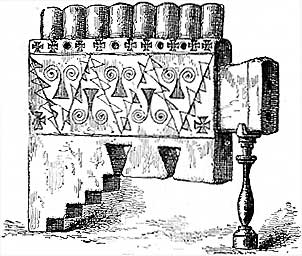
In an ancient Peruvian tomb a syrinx was discovered and procured by General Paroissen.The description of the original, as given in the
catalogue, is as follows :—
"It is made of a greenish stone, which is a species of talc.
Four of its tubes have small lateral finger-holes,
which, when closed, lower the pitch a semitone."
The Inca Peruvians called the syrinx huayrapuhura.
The
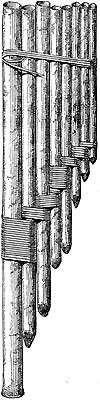
It represents the syrinx from the
All must be so familiar with the many representations of Pan playing his
river-reed pipes, that it is quite unnecessary to give an illustration of one
of them.
It should be said, however, that the commonest number of reeds used among the
ancients was seven,
but eight or nine or even more are occasionally found.
page^
Was the ugab a syrinx or an organ?
As the former seems to have been the more ancient of the two, and as ugab is included in the very first allusion to
musical instruments in the Bible, it would seem reasonable to say at once that
it was a syrinx, especially as this
instrument was, and is to this day, commonly met with in various parts of Asia.
Yet it would indeed be strange if such an instrument were selected for use in
Divine worship; and that the ugab was so used
is proved beyond a doubt by its mention in Ps.cl.:
Praise Him with the minnim
and ugab.
Its mention here in antithesis to a collective
name for stringed instruments surely points to the fact of its being a more
important instrument than a few river-reeds fixed together with wax.
Let us not forget that we have but one and the
same name for the single row of about fifty pipes, placed, perhaps, in a little
room, and the mighty instrument of 5,000 pipes, occupying as much space as an
ordinary dwelling-house, and requiring the daily attention of a qualified
workman to keep its marvellous complications properly
adjusted.
Each is an organ.
May it not have been the case that the ugab,
which in Gen.iv.21 is mentioned as the simply-constructed wind-instrument, in
contrast to the simple stringed-instrument, the kinnor,
was a greatly inferior instrument to that which in Ps.cl.
(before quoted) is thought worthy of mention by the side of a term for the
whole string-power?
Even if it be insisted that the first-mentioned ugab was nothing more than a syrinx,
are we, therefore, forbidden to believe that the mere name might have been
retained while the instrument itself was gradually undergoing such alterations
and improvements as to render it in time a veritable organ?
That men's minds have from the earliest time striven
to find out in what way many pipes could be brought under the control of a
single player, there are indubitable proofs.
A passage in the Talmud [Mishna, Tr.
describing an instrument called magrepha,
which was said to be used in the
The word magrepha, signifies "a fork," and the
instrument was so named because of the similarity of the outline of its upright
pipes to the prongs of a fork.
This organ, for it is entitled to the name, had a wind-chest containing ten
holes, each communicating with ten pipes;
it therefore was capable of producing 100 sounds.
These were brought under the control of the player by means of a clavier,
or key-board.
Its tones were said to be audible at a very great distance.
Supposing that the whole of this account is
apocryphal, it still shows that in the second century such an instrument was
not only considered possible, but believed, rightly or wrongly, to have
actually existed at some previous period.
page^
Let us now trace the various stages through
which the organ has passed, while developing from what we should now consider a
toy, to that noble instrument which makes our beautiful cathedrals and churches
ring again with sweet sounds, and whose duty it is to guide and support the combined
voices of many hundreds, or it may be thousands, of hearty hymn-singers.
Assuming that a series of wood or metal flûtes à bec had been constructed so as to give in
succession the notes of a scale, and also that the wind-chest was pierced with
holes to receive them, the first thing required by the player would be a
contrivance for allowing him to make any one he wished speak separately.
As might be supposed, the simplest method of doing this is to place little
slips of wood in such a position that they can either be pushed under the foot
of the pipe, and so stop the current of air from passing into it, or be pulled
out so as to admit the air.
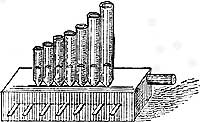
The whole construction is in a more advanced state in the
instrument depicted in Fig. 60.
Not only are its pipes more numerous, but it has bellows specially adapted to
its requirements.
While one bellows is being replenished, the
other is still able to support the sounds, so there is no awkward pause while
the instrument is taking breath.
In the next illustration (Fig. 61),
which is from a MS. Psalter of Eadwine,
in the library of
There is an attempt at an ornamental case, and judging from the number of
blowers required, the music must have been rapid, or the sounds powerful.
As soon as these instruments became large and not easily movable, the terms positive
and portative organ came into existence—
the former being an instrument which, owing to its size, had to remain
stationary; the latter, one that could be carried about.
In the sixteenth century, these portable organs were called regals,
the exact derivation of which is somewhat uncertain.
They formed a very important element in ecclesiastical processions, as their
cases were frequently elegantly decorated.
Fig. 62 is an illustration of a German positive organ of the
sixteenth century,
the shutters of which are also elaborately painted.
This instrument has iron handles, by which it can be moved,
but it is too large to have been of the portative class.
The bellows,
which are behind it, and so not seen in the figure,
are very similar both in position and shape to those seen in Fig. 60.
page^
In attempting to form some opinion as to the degree of excellence
reached by builders of ancient (not mediaeval) organs, it is very necessary to
bear in mind that the principles on which instruments of this class are
constructed have not undergone any radical change since the earliest times.
Indeed, one of our huge modern organs exhibits an ingenious expansion of old
ideas, rather than the invention of new.
Let us suppose, for example, that we have two
rows of pipes (i.e., two stops), one set of metal, the other of wood,
standing in holes in the top of a box, which is supplied with air (more or less
compressed) from a bellows.
Only two problems present themselves:
first, how is the player to make any particular pipe speak while its neighbours stand silent; next, how is the player to have
power to play on whichever of the two sets of pipes he may wish.
When these questions are answered we shall have discovered the two important
principles on which all organs have been and are constructed.
The modern names for the two pieces of mechanism which bring about these
results are, respectively, the pallet and the slider.
In Fig. 59 the simplest method of placing particular pipes
under the player's control was shown.
Slips were pulled in and out from under the foot of the pipes.
The utter impossibility of obtaining from such a system a rapid succession of
sounds, or the simultaneous movement of several slips so as to produce a chord,
will be at once evident.
In modern organs there lies under the foot of the pipe, some little
distance below it, a small flat piece of wood covered with leather, which is
hinged at one end and kept in position by a spring.
Fig. 63.
(a) Chest of compressed air.
(b) Pull-downs of pallet connected with the keys.
(c) Pallets which admit air into groove;
steadied by moving between two wires,
(d) Grooves running from back to front under pipes.
(e) Slider with holes corresponding to pipes,
pulled from right to left,
so as to admit or prevent admission of air to pipes;
connected with the stop-handles.
This is the pallet.
A stroke on one of the keys pulls down the free end of the pallet and allows
air to rush into the pipe.
When the finger releases the key, the spring immediately holds the pallet
tightly against the orifice.
But to have a pallet under every pipe in a large organ would be an
absurdity;
therefore, in arranging two sets of pipes, those giving the same note
(or likely to be required for simultaneous use)
are placed behind one another over the groove into which the pallet admits
the air.
If now a key is struck,
the pipes which give the same note in both our stops will be sounding at once.
Hence the necessity for our slider-action, which is
constructed thus.
A strip of wood runs
continuously under each row of pipes, having holes at distances exactly
corresponding to the distances between the feet of the pipes.
If we push this strip, which is called the slider, into such a position
that its perforations and the openings leading to the feet of the pipes exactly
coincide, then air can pass into the pipes when the pallet opens.
If, on the contrary, we push this strip of wood
so that none of its perforations coincide with the entrances to the feet of the
pipes, no air can reach a pipe, even if the pallet be opened. In the former
case we say a stop is out, in the latter that it is in.
The diagram (Fig. 63)
will make all this easily understood.
How simple are these two great constructive
principles of the organ!
And yet, when once known to the ancients, there remained no obstacle to their
building organs of any magnitude, for the modern organ with its three or four
manuals in tiers, and its pedal-organ, is nothing more or less than a
collection of as many organs all built on these two principles;
and, as before remarked, the ability and ingenuity of modem organ builders has
been directed more to the easiest means of bringing these manifold organs under
one performer's control than to the discovery of a radical alteration in the
principles of their construction.
Who can venture to say that these simple
principles were never mastered by the ancients?
If the reader will turn back to our mention of the magrepha,
he will find that such contrivances must have been known at least as
early as the second century;
and there seems little reason to believe that any sudden and unexpected
discovery led to their adoption.
In the case of all other musical instruments, a gradual but very perceptible
growth in the ingenuity of their construction is to be traced. Why not so with
the ugab.
The only conclusion to be drawn from all this is, that
the ugab must be considered as an instrument
of importance and magnitude in direct proportion to the period of its
existence.
To some this may seem a very contemptible conclusion, but it is not so.
The use of the word extends over a vast period, and those writers, therefore,
who describe it as one unvaried, unchanging instrument are, judging from what
the history of music teaches us, treading on untenable ground.
It is remarkable that the latest improvements in
the construction of the organ should have been in its bellows.
One would have supposed that so important an element in its existence would
have been perfected early in its use.
Such, however, is not the case.
It must be generally known that as the top of a common bellows, such as a
blacksmith's, descends, if left to itself, the pressure on the air contained
inside it increases, because the weight of the top and sides is resting upon a
constantly diminishing quantity and therefore surface of air.
It is also a well-known fact that organ-pipes change in their pitch to a
considerable extent, according to the pressure of the air which is passing
through them.
The ancients, then, if they had only one such simply-formed bellows, could have
produced no sounds at all while the top of the bellows was being raised by the
blower, as this process took off the pressure on the inside air;
and even supposing that several such bellows were adapted to one organ in such
a manner that while the contents of some were being utilised
by the organist the others were being re-filled, even then the pressure of the
air must have been far from constant, unless the ingenuity of the blowers
counteracted the influence of natural laws.
A glance at Fig.
60, on page 100, will show this
plainly.
These old-fashioned bellows were called diagonal.
The bellows of modern organs, called horizontal, practically consist of
the old kind of bellows (now called the feeders) and a reservoir just
above them, which, owing to valves at its under-side, cannot drop while the
feeders are being replenished.
And in order to still further equalise the pressure,
the ribs of our bellows are so arranged that while one set meet inwardly the
others meet outwardly.
It seems almost surprising that horizontal bellows were not made until the
sixteenth century.
Some ascribe their introduction to Lobinger, of
The weight of the human body was very soon utilised by blowers for the purpose of inflating their
bellows, in preference to the muscles of the arm.
page^
The Saxon name for a bellows was bilig or blast-belg, and
like it is the old German Blasebalg.
Hence a bellows-blower was called a bellows-treader (Balgentreter).
Fig. 64 in which this process is rather amusingly
illustrated, is given by Dr. Rimbault, from Coussemaker's article in Didron's
Annales Archeologiques.
The awkward pause which must have taken place when the weight of the treaders had emptied the bellows, and before it was
refilled, can be imagined.
The diagonal bellows and their treaders remained in
existence quite up to the end of last century.
The organ in the comparatively modem cathedral
of
It possessed four such bellows, each measuring 8 feet by 4.
But other large organs had as many as eight, ten, twelve, and even fourteen.
The bellows-treader used to walk leisurely along, and
throw his weight upon them in rotation.
To this day many of the German organs are blown by the weight of the blower's
body, although the bellows themselves are of a modern form of construction.
page^
It would be quite unfair to
the reader to leave the subject of ancient organs without saying a few words on
the much discussed water-organ or hydraulic-organ, which is
carefully described by Vitruvius Pollio,
the celebrated architect of the Augustan aera.
As explanatory drawings were not fashionable in those days, it is quite
impossible to discover what his elaborate and lengthy description really
describes.
But there can be no doubt that the lasting popularity of water-organs was owing
to the fact that, by some agency of water, the pressure of the air was equalised, and the defects just noticed as incidental to
diagonal bellows remedied.
Considering the natural dread which a modern organ-builder has to the approach
of water to his instrument, although he is content to work a hydraulic-engine and
fill his bellows at a distance, the reader may well wonder how and why ancient
organ-builders courted the use of this hostile element.
Assuming that the builders of water-organs were aware of that property of water
which makes it, if enclosed in a small tube passing downwards and into the base
of a vessel of any given area, able to exert on every portion of
that area equal to itself any weight equal to that added to itself, we can,
perhaps, offer some such explanation of their mechanism as the following:—
Suppose two oblong reservoirs of air to be made with their tops fixed, but with
movable bottoms, and joined together with a cross-bar in such a manner that the
bottom of one must rise as the bottom of the other falls.
Suppose also that ordinary valves are placed in the top of each, so that as the
bottom rises the valves close, and the air can only escape through a passage
into the box on which stand the pipes;
while, on the other hand, as the bottom falls the valves drop too, and admit a
fresh supply of air through their openings.
Now, if enclosed water were to be admitted below the bottoms of the reservoirs
with a mechanical arrangement which should not only stop the supply of
compressed water when the bottom of each reservoir had reached its highest
point, but also let the water escape through a waste-valve at the same time, it
is not difficult to conceive of a very equal and strong supply of air being
sent to the pipes as the two reservoirs were filled and emptied in turn.
As long as the water continued to be pumped to the higher level, so long would
the supply of air last.
There is much in the account of the instrument, as given by Vitruvius,
which carries out this view, but parts of his description are unquestionably
somewhat figurative.
In opposition to the explanation of water-organs here attempted, it may be
urged that had the Romans been aware of the peculiar properties consequent on
the gravity of liquids, they would never have taken the trouble to build, as
they did, massive and beautiful aqueducts when a closed pipe or tube would not
only have brought the water safely down into the valley, but up the other
hill-side to the same level.
Also, that a hydraulic-organ is sometimes spoken of as playing by itself, and
how can this be made consistent with the account here given, unless the
organ-blower used to be considered the real player, while the man at the pipes
was looked upon as a mere nonentity?
And, again, it is occasionally mentioned that these instruments were worked by hot
water, and if the water were simply used to obtain a force from its special
laws of gravity, why in the world need it first be boiled ?
Another explanation of the structure of a
water-organ may be hazarded.
If into a perfectly closed chamber of air a water-pipe is introduced, the air
will, of course, be compressed in proportion to the quantity of water forced
in.
If pipes were placed over such a chamber, with a slider under each pipe, under
the control of the player, the admission of the air from the chamber would
unquestionably cause them to speak, and with two such chambers a tolerably
constant supply of compressed air could be obtained, one providing this while
the other was being emptied of its water.
This digression on the hydraulic organ is not
altogether out of place here, as enthusiasts are not wanting
who would make us believe that this instrument was among those known and used
by the Jews in their
[Chappell states that it was invented in the third century BC. See his History of Music, p. 326.]
Several authors have attempted to give pictures of them, and, it is not too
much to say, have seriously taxed their inventive powers in so doing.
Among them may be quoted Kircher, Isaac Vossius, Perrault (Commentary on Vitruvius), and Optantianus.
A rude representation of one is also to be seen on a coin of the time of Nero,
preserved in the
That here given (Fig.
65) is from Hauser's Kirchen Musik, and
is to be found, with much more valuable information, including the text of Vitruvius' account, in Rimbault's
well-known History of the Organ.
It is probably purely fanciful;
the reader is therefore likely to be, after studying it carefully, as wise as
he was before.
page^
If we turn to that nation
whose careful preservation of old traditions in art renders their present
customs unusually valuable —the Chinese—we are struck by a remarkable fact,
namely, that the organ they use is constructed on a totally different principle
to that which has grown up in Europe.
It is blown by being placed against the mouth of the performer, a truly
primitive method, and one which, if adhered to, must have utterly prevented any
great improvements in the instrument. The player finds room to pass his hand
round into the back of the instrument, and so reaches the pipes which he has to
stop, for by stopping the holes, the pipes are made to speak.
Fig. 66 represents a cheng
or Chinese organ,
and in Fig. 67 is shown the position in which it is held when
in use.
The most important difference between the cheng and
our organ is that its sounds are produced by free reeds.
The method by which sound is produced in an ordinary reed-stop on the
organ is this: the metal tongue of the reed is rather larger than the
orifice through which the air is forced, and is slightly curved at its
extremity.
When, therefore, the current of air is directed to it the tongue is forced down
over the orifice, but its own elasticity causes it to return, when the air
again forces it down, and so on; the number of these backward and forward
motions being of course the number of vibrations necessary to produce the particular
sound required.
But in the case of the free reed, the tongue is not so large as the orifice through which the air is forced;
when, therefore, the current of air is directed against it, it bends, and passes through the opening, but is
immediately restored to its position, as in the ordinary reed, by its own
elasticity.
That is to say, the tongue of the common reed beats against the opening, that of the free reed passes in and out of
it.
It is almost incredible that such a simple
source of obtaining sweet sounds should have remained so long unused in
It is said that an organ-builder, by name Kratzenstein,
of
But the real value of free reeds does not seem to have been appreciated until Grenie, of
Perhaps few of the many thousands who play upon this cheap and (now)
sweet-toned instrument are aware that it is a true descendant of a cheng.
Accordions and concertinas form the connecting link between the cheng and harmonium, as they combine the portability and
free reeds of the former, with the bellows-system of the latter.
The cheng contains from thirteen to twenty-one pipes,
and is probably one of the oldest wind-instruments now in use.
Some have gone so far as to call it "Jubal's
organ," but had it been in use among the jews,
it is difficult to believe that all traces of it would be lost among the
nations which were in close contact and inter-communication with them,
especially as it is exceedingly light and easily carried, and would therefore
in all probability have been preserved by them in their wanderings and
captivities.
It is improbable, therefore, that the cheng, ancient
as is its origin, is allied to the Hebrew ugab,
and the latter was probably at the earliest times a collection of pipes of the
very simplest character, but growing into more importance as from time to time
improvements were made in its construction.
We have seen that the Jews were not unwilling to adopt the improved form of
stringed instruments which they sometimes found in neighbouring
nations, and there is no special reason for supposing that in the case of the ugab no attempts were made to improve upon the form
invented by Jubal.
An organ, in our modern sense of the name, it hardly could have been, unless keys
were invented by the ancients;
but a collection of pipes it certainly was, which could be made to sound at
the-will of the player, albeit, perhaps, by clumsy mechanism.
In the Septuagint the word ugab has three
distinct renderings— κιθάρα (cithara) in Gen.iv.21;
ψαλμός (psalmus)
in Job xxi.12, and xxx.31;
and ὄργανον (organuum) in Ps.cl.4.
That learned scholars should have ventured to translate one Hebrew word by
three names of such totally different significations as "guitar,"
"psaltery," "organ," is a sufficient warning as to the
danger of trusting to translations.
In our Authorised Version it is uniformly rendered as
"organ"—
Such as handle the harp and organ
(Gen.iv.21);
Rejoice at the sound of the organ
(Job xxi.12);
My harp (kinnor) also is turned to mourning,
and my organ (ugab) into
the voice of them that weep
(Job xxx.31);
Praise Him with the timbrel and organ
(Ps.cl.4).
But in the Prayer-book version it is in this
last passage rendered by "pipes:"
Praise Him in the strings (minnim) and pipes (ugab).
Here the word is perhaps used to express
wind-instruments generally:
Praise Him with stringed instruments and wind
instruments.
The German version of the Bible translates ugab in every case by "pipes" (Pfeifen).
As organs form, in our days, such an important
element in the musical part of Christian worship, a few words on the probable date
of their dedication to this sacred function may not be unwelcome.
It is generally said that they were introduced into Church services by Pope Vitalianus in the seventh century.
But on the other hand, mention is found of an organ which belonged to a church
of nuns at Grado, before the year 580.
This instrument has even been minutely described as having been two feet long
by six inches deep, and as possessing thirty pipes, acted upon by fifteen keys
or slides.
It is very doubtful if they were familiar to the Romans, although an epigram of
Julian the Apostate alludes to them.
It seems, however, to be tolerably authenticated that one was sent by
Improvements in their construction are attributed to Pope Sylvester, who died
1003.
When we reach the time of Chaucer their use must have been common, for he thus
speaks in his Nonnes Preestes
Tale (Nun Priest's Tale) of a crowing cock "highte
chaunticlere."
His vois was merier
than the mery orgon
On masse dales that in the chirches
gon.
The
very existence of organs was imperilled in the
troublous times of the Rebellion,
and Puritans were no friends to their re-introduction.
Opinions
differ as to the derivation of the word ugab.
Buxtorf traces it to a root agabh,
which signifies "to love,"
and therefore defines it as "instrumentum musicum, quasi amabile
dictum."
By another author it is derived from an Arabic root akab,
"to blow."
The only passages in Holy Scripture in which the ugab
is mentioned are those above quoted.
page^
Mashrokitha
or mishrokitha is the name of a musical
instrument mentioned only in verses 5, 7, 10, and 15 of the 3rd chapter of
Daniel. It has been described by different writers as a double flute,
pan-pipes, and also an organ.
As an example of the thoughtless manner in which illustrations are appended to
supposed descriptions of ancient musical instruments, it may be mentioned that
the figure of a magrepha, as given by Gaspar Printz (1690) has been
given in a well-known work on Biblical literature as an illustration of a mishrokitha. Considering that these
instruments had not only no claim to similarity of construction, but also were
used by two distinct nations at an interval of about 600 years, the
appropriateness of the figure of one (which by the way was in the first
instance purely imaginary) as an illustration of the form of the other is, to
say the least, somewhat remote.
The word mashrokitha is traced to a root sharak, "to hiss" (sibilare),
and as a certain amount of hissing necessarily accompanies the use of
pan-pipes, the mishrokitha has been generally
thought to be an instrument of that class.
It is indeed rendered in the Greek by σῦρυγξ (syrinx).
The fact that the Hebrew translation of mashrokitha was ugab does not go to prove that the ugab was a syrinx,
as we have had sufficient doubt thrown on the trustworthiness of
translators by the manifold renderings of ugab
itself.
page^
《舊約》中提及的唯一膜鳴樂器。據薩克斯考證：TOF類似阿拉伯的duff，都屬閃族的木框鼓（frame drum），也許兩面張鼓皮，不掛小鈴，不用鼓槌（《樂器史》）。這種起源於近東的樂器顯然是後來總稱為tambourine（手鼓）的那類樂器。
TOF共出現15次，幾乎是女性專用樂器，而且多用於喧鬧歡樂的場合，如迎賓宴客、班師凱旋、請櫃頒主。此外也是先知受感的樂器之一，又是上帝懲罰亞述人的背景音樂（《以賽亞書》30:32）。在《次經》（一譯"後典" ）和《塔木德》中還是婚禮上的樂器。
也許因其多為女性所用，而被排斥於聖殿之外。雖然《詩篇》中有三處（81:2，149:3，150:40提及作為頌主樂器之一，但《塔木德》、《密西拿》還指明聖殿儀式不用鼓、不用舞蹈及任何身體動作。所羅門時代的第一聖殿樂隊中也沒有它，這在《舊約》本身就已表明。對上述矛盾現象，唯一可能的解釋是：《詩篇》中提及的樂器與歌舞往往是詩歌中修辭的需要，並無實際意義（起碼上述三處是如此）。這在《舊約》中不是個別的現象。 [size=3]至於與TOF一起出現過5次的MACHOL（舞蹈）（此外僅在《耶利米哀歌》5:15中單獨出現過1次），其詞根有"穿孔"的意思，因此施泰納提出它可能是一種吹管樂器，因為在歡樂的場合鼓笛齊鳴即意味著舞蹈，或是一種專為舞蹈吹奏的管樂器。他還在敘利亞文的《聖經》中找到了依據，MACHOL在那兒譯作rephaah，一種仍在敘利亞使用的笛（《聖經音樂》第五章）。
希臘本的tympanon以及由希臘傳入羅馬後的拉丁形式tympanum，欽定本交替使用的timbrel和tabret，還有修訂標準本的timbrel（10次）和tambourine（5次），都表明TOF是一種"手鼓" 。似乎英譯者不太願用歐洲人慣用的tambourine這一正式術語，可能嫌其法語味太重（該詞源於法語tambourin，普羅旺斯的一種長鼓），雖然timbrel和tabret也都源于古法語（timbre和tabor，皆指鼓，後者又可上溯到波斯語），但畢竟在中世紀就已傳入英國，更具古老的色彩。由此看來，用表示這一類別的frame-drum更好，和合本的"鼓"宜改為相應的"木框鼓"或"手鼓"。
CHAPTER X.
HOME | Contents
| manghanhim
| sistra
- rattles | toph
- tambour | tambours
| page^
ONCE only is this word met with in Holy Scripture—in
2 Sam.vi.5;
And David and all
the house of
even on harps, and on psalteries, and on timbrels,
and on cornets, and on manghanghim.
Although translated here "cymbals,"
the root of the word in Hebrew points to the old Latin root nuo,
whence nuto, "to sway to and fro, to vibrate."
Now, the word sistrum (σειστρον) comes from a Greek verb σείω, having an almost identical meaning.
There is, therefore, a very good reason for believing that the word manghanghim refers to an instrument which vibrated when shaken or rattled.
One of the two classes of sistrums
exactly answers to this description.
Through an upright frame of metal, supported on a handle,
several metal rods are passed and fixed in their position, generally by bending
the extremities.
On them are placed loose metallic rings.
Fig. 90
shows two examples of this instrument which are preserved in the
The position of the rings in this illustration may perhaps lead to the
supposition that they are fixed by the centre;
this is not the case.
They, of course, should lie loosely on the bars.
|
|
|
|
Fig. 91
shows Egyptian priestesses in the act of playing on this kind of sistrum at a religious ceremony.
The second kind of sistrum, above mentioned, had
metallic bars, without rings. Hence, it has been thought by some that
the bars were of graduated length, and gave a series of musical sounds
when struck by some hard substance held in the other hand of the player.
Fig. 92 represents two of these.
Their Egyptian name is doubtful, but the word kem-kem
is thought to apply to them, although the Coptic version translates the " sounding brass" of i
Cor.xiii.1 by kem-kem.
Others think it applies to the tambour.
Rosellini has deciphered the word sescesch,
and interprets it as "sistrum."
If the rods were really in proportional lengths, and were struck, the tones of
a sistrum of this class would be more determinate
than those of cymbals.
The Romans used it, or at least were aware of its existence and uses;
fairly true representations of it being found on some of their medals.
This may have been the aerum crepitaculum of their poets.
As the sistrum often, among the Egyptians,
accompanied rites of a very wanton and lascivious character, there is something
intensely sarcastic in Virgil's description of Cleopatra leading her forces to
battle to the sound of the sistrum—
Regina
in mediis patrio vocat agmina sistro. (Virgil, AEneld,
viii. 696.)
The close connection between musical instruments
of apparently very divergent species has been often before remarked;
it is not surprising, therefore, to find a link between cymbals and the sistrum.
Fig. 93
shows two such ornamental bars of metal held,
one in each hand of the performer,
which, when struck together, produce a loud clanging sound to mark the rhythm
of a dancer.
The fact that they are clashed together gives them a relation to cymbals, while
their form—
that of vibrating rods—
renders it difficult to place them otherwise than under the head "sistrum."
The word shalish
occurs only in i Sam.xviii.6.
It has been variously described as a triangle, a sistrum,
and by some—a fiddle!
The root implies the numerical value of three.
And it came to pass
as they came,
when David was returned from the slaughter of the Philistine,
that the women came out of all cities of
singing and dancing, to meet King Saul,
with tabrets, with joy, and with shalishim
(margin, "three-stringed instruments").
Whatever may be the antiquity of the viol
family, it is difficult to believe that an instrument, which must have been in
very common use—
as the people flocked together who could play it, "from all cities of
should be only incidentally mentioned once in the whole course of Jewish
chronicle.
The notion that all the women of
A triangle it might have been, but it is more probable that it was a sistrum, either with three rings on each bar, as in Fig. 90, or with three vibrating bars, as in Fig. 92.
page^
Fortunately there is but little doubt as to the
nature of the toph.
It was a tambour, timbrel, or hand-drum.
All nations seem to have possessed drums of various kinds, but always of a
comparatively small size.
It remained for modern Europeans to produce the gigantic specimens which are to
be found in our orchestras.
Few, who have been present, can forget the huge upright drum, far exceeding the
height of its upstanding player, that adds its deep
rolling bass note to the mass of sounds which are heard at the Handel Festivals
in the
Such drums were never dreamt of by the ancients.
The necessity for having portable instruments would have excluded them from
use, even if their presence had been thought desirable. Modern tambours, or
tambourines, as we more usually term them, are invariably round in
shape;
those of the ancients, especially of the Egyptians, were sometimes oblong
or square.
Fig. 94 exhibits both kinds in use.
They were one of the chief ingredients of their funeral lamentations,
which seem to us to have been strangely prolonged.
It is said that such ceremonies, when a prince died,
lasted as many as seventy days.
They then sang,
or uttered their mournful cries,
to a tambour accompaniment.
But the Egyptians also had drums of two other
kinds.
One consisted of a wood or copper cylinder covered at both ends with parchment;
which was beaten at both ends with the hands, just as the tom-tom of
The Egyptian "long-drum," as it may be
called, was, both as to size and shape, very similar
to this tom-tom, which is not unfrequently to be seen
in the hand of some poor wanderer from our distant empire, who is begging about
the streets of
Fig. 95 shows the manner in which it was carried and
beaten.
The other instrument of this class is peculiarly interesting, as being
evidently the prototype of our modern kettle-drum.
It was called darabooka,
and was formed by stretching parchment over the open end of a basin of metal or
earthenware.
When, as was the case in ancient times, this kind of drum was small and easily
carried, the termination of the hollow bowl by a handle was ingenious and
useful.
But as their size increased,
the handle had to give place to three feet, and the metal bowl could be
rounded—a form greatly to the advantage of free vibration.
Our kettledrum is therefore little else than a very large darabooka,
standing on a tripod, instead of terminating with a handle.
The darabooka is shown in Fig. 96.
page^
The Assyrians appear to have used the tambour,
and also a drum,
suspended by a cord round the neck
(see Figs. 97
and 98).
But the instrument they thus carried seems not to have been beaten, like the
Egyptian long-drum and the Indian tom-tom, at both ends,
but only at its upper surface.
Two questions arise with regard to ancient drums
and tambours.
Was the parchment or head of the drum rigidly fixed,
or was it capable of being tuned?
The reader is no doubt well aware that to the edges of the head of a modern
drum is attached, in the case of a side-drum, a series of cords, and in the
kettledrum a metal ring, by means of which the parchment can be tightened or
loosened, and consequently a power of regulating the pitch is obtained.
Probably the head was fixed, and the ancient drums and tambours could not be
tuned.
The lines which cross the long-drum of the Egyptians in Fig. 95 look very much like the cords which cross the
cylinders of our side-drums, but these cross-bars are evidently only a rude
attempt at ornamentation.
The second question is,
had the ancient tambours little bells, plates of metal,
or castanets inserted in the rim, as we have in our tambourines?
Probably they had.
Fig. 99 shows an Arabian tambour called bendyr.
There are holes in the rim of this which unmistakably suggest the probable
insertion of some sort of pulsatile contrivance or
other.
Moreover, it is known that such appendages were not strange to the Greeks.
The bendyr also
contains five strings stretched across the inner surface of the head, as seen
in the illustration, for the purpose of reinforcing its tone.
Such a construction seems to have been introduced in comparatively late
times.
Stretched strings were formerly used for a like purpose in instruments of
several other kinds, notably in the stringed instrument called viola d' amore,
in which metal strings were stretched under those of catgut, passing under the
finger-board and through the middle of the bridge, which was pierced to receive
them.
The Arabs have three varieties of tambour, besides that called bendyr.
One of them, the mazhar, smaller than
the bendyr, has no reverberating
strings, and has metal rings instead of castanets.
Another, the tar, has, like the mazhar,
no stretched strings, but has four copper castanets.
The fourth kind has only two castanets.
Goatskins generally form the head of these Arabian tambours, which are chiefly
played by women, as was the case among the ancient Egyptians.
The Arabians have drums, not unlike kettledrums,
and they may be seen playing them on horse-back or camel-back,
just as the kettledrums are carried and played by the bands of our cavalry
regiments.
Fig. 100
shows a very beautiful specimen of an old tambour,
exhibited in the
which has not only castanets in the rim,
but bells suspended in the interior.
It is impossible to say whether the Hebrews used
the drum as well as the tambour.
Most probably the latter only was known to them.
Its antiquity is proved by the fact that mention is made of it in conjunction
with the kinnor, in the passage once
before quoted (Gen.xxxi.27),
where Laban rebukes Jacob for having left him
stealthily,
whereas an honourable departure would have been
accompanied with songs, toph, and kinnor.
It was a toph
which Miriam took in her hand when she led the song and dance on that wondrous day
when Israel saw the "great work" which God had done, and thankfulness
burst forth from side to side as they answered one another—
Sing ye to the Lord,
for He hath triumphed gloriously
(Exod.
xv. i).
Very different were the feelings which filled
the breast of Jephthah when his only child came forth
with toph in hand to welcome his victorious
return from unequal fight with Ammon.
Among the instruments which the company of
prophets bare, who met the future King Saul,
was a toph (i
Sam.x.5), and the same instrument was ere long to be a source of jealousy and
chagrin to him when the women of Israel praised the youthful hero David on his
return from slaying the giant;
and it was part of the music which graced the return of the ark from Kirjath-jearim.
That the use of the timbrel was not limited to
religious ceremonies, is plain from the allusion in
Isa.v.12.
It seems not to have been carried in warfare.
On the contrary, in the following passage from Isaiah (xxx.32) its mention is
apparently intended to show the cheerful peace which should everywhere follow
on the smiting of the Assyrian —
And in every place
where the grounded staff shall pass,
which the Lord shall lay upon him,
it shall be with tabrets and harps.
The tabret has now
been excluded from sacred buildings, having given place to the more solemn and
imposing drum.
It may perhaps be said that in speaking of the
probable nature of the kinnor and nebel, too much reliance has been placed on
the argument that people have a tendency to use light portable instruments when
travelling, and larger instruments in religious and
civil ceremonies.
If, however, we consider the habits of the
present day in this respect, we shall find more support of the argument than
might at first be supposed.
For example, street-singers, who travel from place to place over long
distances, have more or less adopted the portable banjo as an
accompaniment to the voice, leaving the full-sized guitar and the large harp
either to the concert-room or to street-musicians who remain in large
cities.
Then, again, although the two once well-defined classes of portative and
positive organs have merged or died out, there still remains the positive
organ in our churches and halls, and the portative barrel-organ whose
existence can be verified by the sad experience of all lovers of quiet.
As regards drums, we certainly possess the light
tambourine, and the large kettle-drums of concert use.
The portable violin, called kit in
The same remark may be applied to the pianoforte, for although large
instruments mechanically played are now wheeled about our great cities, there
was formerly a marked distinction between the portative pianoforte played by
gipsy women and the heavy instrument placed in drawing-rooms.
It would seem justifiable, therefore, to assume
that nomadic tribes would use small, simple types of instruments, while the
inhabitants of great cities would also use instruments of more elaborate
construction and of greater capabilities in their worship or court-ceremonies.
page^
兩種形式的詞根各自可分析為：M- TZILT-TYIM，其組合即首碼—象聲詞根—表示"雙數"的詞尾，表明該樂器由兩部分組成；TZIL-TZEL-IM，其構成為象聲詞根—象聲詞根—複數詞尾，表明該樂器有兩種音色。TZIL這一詞根正與土耳其同類樂器Zil的名稱相似。而TZIL的動詞tzalal有"碰撞發聲"之意。該樂器用銅製成（《歷代志上》15:19）。
這一樂器共出現13次，如在請約櫃、聖殿竣工等典禮中以及聖殿樂隊中。可見它是一種宗教儀禮樂器，不用於民間世俗場合。敲鈸也是利未人的專職，在大衛時代的樂隊中，只有該族叫亞薩的一名敲鈸者（《歷代志上》16:5）。據《塔木德》，第二聖殿樂隊中也僅有一名敲鈸者，用來示意儀式的開始以及詠唱中的停頓與器樂間奏的進入（希伯來文稱Sela）。
關於其音樂，《詩篇》150:5中有記載："用大響鈸、用高聲的鈸" 。看來這種樂器分為兩類。據波林考證：前者是tziltzile shrua，直徑較大，音色沉重，左右敲擊（如現代鈸）；後者是tziltzile truah，直徑較小，音色清晰，上下敲擊（《古代近東音樂》）。關於後一種小鈸，薩克斯在《樂器史》中描述成：置於一根有彈性的分叉竹竿的兩側內。他稱為"拍板鈸"（cymbals on clappers）。
《聖經》的譯者們都將這種樂器譯作cymbals（中文"鈸" ），從古希臘至今無一例外。
PART III. CHAPTER IX.
HOME |
Contents
| tseltslim
| ancient
cymbals | Arabian
cymbals | little
cymbals | cymbals
& bells | page^
THESE words, which are found about a dozen times in
the Old Testament, are, with only one exception, rendered "cymbals"
in our version.
This name fully describes the form' of the instrument, for cymbal comes
direct from the Greek κύμβαλον (cymbalum), which in turn comes from κύμβος (cymbus), a hollowed plate or basin.
page^
Now, although there are in use among most
nations a large number of varieties of this instrument, differing in size, yet
there are only two having any broad distinction in form.
Of these, the one was almost identical with our modern soup-plate (having a
somewhat larger rim);
the other had a hollow commencing at the very rim, and terminating in an
upright handle, giving it the appearance of a hollow cone, surmounted by a
handle.
Both sorts were in use
among the Assyrians.
The comparatively flat cymbals were played by bringing the right and left
hands, each of which held one plate, sharply together at right angles with the
body.
Of the conical-shaped cymbals, one was held stationary in the left hand, while
the other was dashed upon it vertically with the right hand.
Fig. 85 shows an Assyrian in the act of striking this
last-mentioned form of the instrument.
Sculpture also shows people striking the flatter instruments in the manner
above described.
The ancient Egyptians also
used cymbals made of copper, with a small admixture of silver.
Most fortunately a pair of these was discovered in the tomb of a priestly
musician named Ankhape, close by his mummied body.
These are given in Fig. 86.
The perforation in the top is, of course, for the purpose of passing a loop of
cord through as a handle.
A leather strap is used for this in modern instruments.
These ancient specimens are about five inches in diameter,
and are said to be almost identical, both in form and size,
with those used in
In Ps.cl.5 two sorts are evidently pointed out:
Praise
Him upon the loud cymbals;
praise Him upon the high-sounding cymbals.
Bearing this in mind, it is very interesting to
find that the Arabs have two distinct varieties, large and small;
for the "loud cymbals" of the Psalmist would certainly be of a larger
diameter than the "high-sounding" cymbals.
In the Prayer-book version of this Psalm, the real distinction between these
two species is unfortunately not made plain:
Praise
Him upon the well-tuned cymbals;
praise him upon the loud cymbals.
The Arabs use their large cymbals in religious
ceremonies, but the smaller kind seem to be almost limited to the accompaniment
of dancers.
In
There is also a smaller species called kintal.
The Bayaderes dance to the tal.
The Turks, as would be expected from their early
origin amongst the table-lands of central
They have always excelled, not only in the use of instruments of percussion,
but also in their construction.
From the fact that the foot-guard of the Sultan were
formerly called Janissaries, music chiefly consisting of a combination of the
sounds of instruments of percussion has been called "janissary
music."
The efforts of Frederick II. to
obtain genuine music of this sort for German use are well known.
Turkish cymbals still hold a high value, and are manufactured in that country
in very large quantities, for exportation westward.
Gongs, though perhaps less strictly musical
instruments than cymbals, must be classified with
them, and many nations celebrated for the manufacture of one are equally famous
for producing the other.
The Chinese and Burmese,
for instance, use both cymbals and gongs,
the latter being sometimes suspended on cords in a series of different sizes,
so as to produce their national scale when struck in succession.
Fig. 87 shows a specimen of Indian cymbals;
Fig. 88, one from Burmah.
The joining together of the two plates by means of a cord does not appear to
have been at any time a common custom in
The Greeks and Romans, by whom cymbals seem to
have been shaped strictly in accordance with what the name implies—
hollow hemispheres of metal,
used them in the rites connected with the worship of Bacchus, Juno, and Cybele.
But, as has happened in other cases, the name cymbal has been in the
most extraordinary way applied to instruments of a totally different
construction.
The Italians, at one period, called a common tambourine by this name, and even
went so far as to apply it to the dulcimer!
We have in a previous article traced the growth of a dulcimer through various
stages, till it reached the form of a harpsichord; the reader, therefore, will
not be astonished to find, at a later date, "cymbal" used for
harpsichord.
But this is not all.
As the pianoforte was the direct offspring of the harpsichord, the pianoforte
part in a full score is to this day sometimes marked cembalo, or
"the cymbal part."
It seems to be a matter for much regret that musicians should feel bound, by
habit or fashion, thus to perpetuate a title which is not only unmeaning, but
absolutely incorrect.
It is difficult to understand in what respect the dulcimer was thought to bear
any resemblance to cymbals.
Some say that because it was struck with hammers, it might with justice be
called an instrument of percussion;
but it is more probable that the peculiar clang caused by hitting wire strings
with little wooden mallets, gave some fanciful resemblance between the
"ringing" tone of both instruments.
In modern military bands, cymbals are used as of old;
a plate being held firmly in each hand by a leather thong,
and by swinging the hands together the plates clash.
In modern orchestras the instrument is generally used thus:
one plate is horizontally fixed (rather loosely) on to the top of an upright
drum;
with his left hand the player holds the other plate,
and with his right hand a drumstick.
Thus, not only can one performer play both instruments simultaneously,
but the tone and clang of the cymbals are much intensified by being in close
connection with the vibrating skin and frame of the drum.
page^
Cymbals, in a somewhat unexpected manner, came
to be associated with the tambour.
For as they became reduced in size it was found possible to insert several
pairs inside the rim of the tambour, so that their clatter should either
join the rhythmical beating of the tambour, or be heard alone when the tambour
is held by one hand, and made to swing rapidly from side to side, a diameter
being its axis.
These "petites cymbales" were occasionally fixed to the thumb and
forefinger of both hands, which were then clapped together, as shown in Fig. 89.
Hence they came to be called castanets, from their similarity to the old
toy—
hardly worthy of the name of a musical instrument, although it was used with
dancing—
which consisted of chestnuts attached to the fingers (as in Fig. 89), and beaten together;
the words chestnuts and castanets both being derived from castanea (Lat),
and κάστανον (Greek), the name of the tree.
But in process of time, pieces of ivory or
mother-of-pearl were substituted for chestnuts.
Hence the bones which we see rattled between the fingers of supposed negroes are dignified with the name castanets, and can in
some sense trace their pedigree to the ancient cymbals.
Hence, too, we get an explanation of the old word nakers
or nackers, which was applied to
castanets by Chaucer, and used commonly at a later period.
Evidently it alludes to the material of which they were made, nacre being
the French, and nacar the Spanish for
"mother-of-pearl."
Very small cymbals have occasionally been used in the modern orchestra.
Berlioz, who gave so much attention, and devoted so much talent, to the
increasing of the resources of a band, used, in a symphony, a pair not bigger
than the palm of the hand, and tuned them at an interval of a fifth apart.
It should be stated that in playing cymbals, not only in
If the former method be adopted, the vibrations of the plates are very liable
to destroy each other, owing to the extent of the contact of the two surfaces ; if the latter, the plates have more
"play" when in vibration.
In the Holy Scriptures the use of cymbals is
solely confined to religious ceremonies—
the bringing back the ark from Kirjath-jearim (i Chron. xv.16, 19, 28);
at the dedication of Solomon's Temple (2 Chron.v.13);
at the restoration of worship by Hezekiah (2 Chron.xxix.25);
at the laying the foundation of the second Temple (Ezra iii.10);
and at the dedication of the wall of Jerusalem (Neh.xii.27).
This would lead us to suppose that cymbals were not commonly used as an
accompaniment to dancing among the Jews.
Certain Levites were set aside as cymbalists, as described in i Chron.xvi.42, and elsewhere.
They are mentioned in Ezra iii.10, as being used with trumpets (khatsotsrah) only, but in most other instances are
described as being used with harps and other Hebrew instruments.
There is deep meaning in the allusion of
Inasmuch as it gives out a shrill and clanging sound (κύμβαλον ἀλαλάζον), and is incapable of being tempered or tuned
so as to form ever-varied chords with those musical instruments which surround
it, it too well illustrates the hollowness and emptiness of character which,
while making noble professions with the tongue, lacks that gift of charity
which, if it truly glowed in us all, would soon attune all the discords of this
world into such a sweet harmony as were worthy of heaven itself.
It is a pity that ἀλαλάζον should in this fine passage have been translated
"tinkling,"
a word now used to describe any trifling, petty jingle;
it should have been "clanging " or "clashing "
cymbal.
page^
The one instance, before alluded to, in which
the word tseltslim has been translated
otherwise than by the word "cymbals," occurs in Zech.xiv.20, where it
is rendered by "bells:"
In that day shall
there be upon the bells of the horses,
HOLINESS UNTO THE LORD.
The margin here has another reading—"upon the bridles of the horses," but if the word be understood in a
musical sense or not, it can in no way be considered as badly rendered by
"bells."
For the Eastern custom of having little plates of metal attached to the
caparisons of horses so as to produce a jingling noise, is well known.
And if these plates had a circular indentation, they would be little cymbals;
and if the indentation should be made deeper, and the rim be gradually bent
into a circular outline, a little bell is the result.
This gradual change of metal plates into bells is interesting and important.
The indentation of cymbals would be found to add to their vibrating power and
sonority, and as this indentation became exaggerated, nothing would be more
probable than that they should eventually be formed into half-globes.
This form, as has been before remarked, is actually to be found in Roman and
Greek sculpture.
Then again, in course of time, these half-globes or, as they might be truly
called, these hemispherical bells, would be
found to be shrill and noisy in tone.
Then again would naturally follow the experiments, as made in
Here at last we have a real bell with the so-called sound-bow, or thick
lip.
But here it should be observed that
they seem not to have existed as musical instruments until the Middle Ages.
Of the bells of the Bible, therefore, we have but little to say.
They were mere accoutrements, not capable of being arranged so as to produce
the consecutive sounds of a musical scale.
The care bestowed upon their form and construction, particularly in
namely, that of hanging them on the axis of a wheel, and ringing them by a
complete swing.
The most ancient bells yet discovered are found not to be castings,
but to consist of a plate of metal, bent round, and rudely riveted where the
edges met.
Bells, then, are closely allied to cymbals, but when mentioned in ancient
authors, are not to be looked upon as musical instruments.
The Assyrians used them, as did the ancient Chinese, and not a few have been
found in Irish bogs, or in the drift.
If, then, the "bells on horses" were not little cymbals, they were
not more than toy-bells, such as are to be often heard in our own country
lanes, when the miller's team is lazily led along under the autumn sun, warning
any wagoner coming in an opposite direction to draw
near the hedge and allow a free passage.
Phaghamon is the name used in Exod.xxviii.33, for
such bells on the priests' garments:
And beneath upon the
hem of it
thou shalt make pomegranates of blue, and of purple,
and of scarlet round about the hem thereof;
and bells of gold between them round about:
a golden bell and a pomegranate,
a golden bell and a pomegranate,
upon the hem of the robe round about.
And it shall be upon Aaron to minister:
and his sound shall be heard
when he goeth in unto the holy place before the Lord,
and when he cometh out,
that he die not.
In Exod.xxxix.25, we read—
And they made bells
... as the Lord commanded Moses.
These are the only two passages
in which phaghamon occurs.
page^
僅出現一次，即在請約櫃的樂隊中（《撒母耳記下》6:5），其作用是"驅除所有死亡的力量"（薩克斯）。原是古埃及崇拜豐產、繁殖女神哈托爾的樂器。
從詞源看，其動詞nua，即"搖動" 。可以按薩克斯等人的建議譯作sistrum（叉鈴）或rattle（搖響器）。希臘本錯譯成kymbala（鈸），而拉丁本譯作sistra（sistrum的複數）是正確的，用複數形式是受希伯來原文影響，欽定本譯作cornet（木管號）相去太遠了！修訂標準本譯作castanets，且不說與原動詞意義不符，它還令人聯想到西班牙響板（窮其淵源也僅可追溯到古羅馬時代）。和合本中譯文不清楚，如按原文樂器排列，似乎成了"鈸" ，這樣其後的cymbals就成了"鑼" ，但調換順序譯作"鑼"也不對。
僅出現一次，即在掃羅、大衛班師凱旋時婦女的歡迎隊伍中（《撒母耳記上》18:6）。該詞詞根與希伯來文"三" （Shlosha）和"三倍" （Shalosh）有關係，表明該樂器可能由三個部分組成。因而，也許是有三根橫杆，或橫杆上有三個小環的Sistrum（叉鈴）或一種三絃樂器（施泰納）。
薩克斯認為譯成任何樂器都不行，因為原文按順序是"with timbrels, with songs of joy, and with shalishim" ，為什麼"手鼓"和Shalishim（若假設為一種樂器）中要夾入"歡樂的歌"？這樣意思不連貫了。因此Shalishim也許是一種與之有關的舞蹈（這類舞蹈在別的民族也是常見的）（《樂器史》。本文前面論及TOF（即timbrel）時，曾指出它總和MACHOL（舞蹈）一起出現，這進一步證實了薩克斯的判斷。因而上句似可譯作："打手鼓並載歌載舞"。
波林則中和了前人之見：三角形樂器、三絃樂器、三橫竿叉鈴、三拍子舞蹈都是可能的，都不能完全排除（《古代近東音樂》）。
希臘本譯kymbala與拉丁本譯sistra，是將其當作與上文MENA'ANIM一樣的樂器了，簡直不知所云。英文欽定本、修訂標準本則比較謹慎，均泛澤成instrument of music(k)(樂器)，後者還附注："或triangle(三角形樂器)或3-stringed instrument(三絃樂器)" 。和合本作"磬"似不妥。看來只能暫譯作"舞蹈" ，下加注："或樂器，皆同三相關" 。
在《出埃及記》中出現兩次(28:33、34；39:25、26)，不是樂器，而是高級祭司亞倫袍子上所釘的小鈴，用金製成，以驅魔自衛；或吸引保護神的注意力。(弗雷澤《舊約民俗學》1923年版) 希臘本kodon、拉丁本tintinabulum以及英文bell均是正確的，和合本"鈴鐺"不如譯作"鈴"。
在用亞蘭文寫成的《但以理書》第三章��，描寫了西元前六世紀巴比倫王尼布甲尼撒攻佔耶路撒冷後在宮廷內行金像崇拜之禮，但這個故事實際上所反映的則是西元前二世紀佔領敘利亞的希臘塞琉古王朝安條克四世時代的史實。他的宮廷樂隊所用六種樂器皆是用古敘利亞的亞蘭方言拼寫的希臘樂器，這是希伯來歷史上"希臘化"時期所留下的痕跡。
用動物角製成，對各種角的希伯來文總稱是KEREN，相對應的亞蘭文則是QARNA，該詞至今還留存于阿拉伯文中。希臘文keras、拉丁文cornu和日爾曼語族(如英、德文)的horn都是詞形稍作變化的同源詞。欽定本作cornet(木管號)屬歸類錯誤。修訂標準本的horn與和合本的"角"是對的。
其動詞Shrika，有"吹哨"之意，詞根輔音Sh-r-k恰似希臘本Syrinx的輔音s-r-x(=ks)，而Syrinx即panpipe(排簫)。拉丁本作fistula，同修訂標準本的pipe，泛指管樂器，但理應分別用拉丁文fistula pani和英文panpipe。欽定本的flute、和合本的"笛"都有時代錯誤與歸類錯誤之嫌。英、中文應分別改作panpipe和"排簫"。
與希臘本的kithara及拉丁本直譯的cithara同源，系一種里拉。欽訂本所譯harp屬歸類錯誤。修訂標準本用lyre是正確的。和合本的"琵琶"(帶琴頸的琉特類)宜相應改為"里拉" 。
指一種希臘角式豎琴。是與希臘文sambyke、拉丁文sambuca同源的詞。據施泰納考證，該詞詞義原指一種攻城器械，像一隻船，船上豎起一架梯子。船體猶如平放的共鳴箱，梯子猶如弦柱，系一種橫式三角豎琴(《聖經音樂》第七章)。這種樂器與前述NEVEL，即豎式三角豎琴，形成了角式豎琴的兩個大類。波林也認為SABBEKA是一種小型、高音調的角式豎琴(《古代近東音樂》)。修訂標準本作trigon有道理，但不如譯作標準的angular harp，和合本的"琴"擬改成相應的"三角豎琴" 。欽定本譯作sackbut，那等於trombone(長號)，其錯誤早就為學者們所指出。
相當於希臘的psalterion，拉丁本用了psalterium，二者都指早期的希臘豎琴，據施泰納考證為一種豎式三角豎琴(《聖經音樂》第七章)。欽定本作psaltery ，易誤解為齊特類樂器，不如修訂標準本譯為harp。和合本"瑟"應改為"豎琴" 。
原希臘文拼作Symphonia，意為"同時發聲" 、"和諧" 。拉丁本照搬過去。欽定本錯譯成dulcimer(杜西瑪琴，一種盒式齊特)，但這種樂器出現在西亞是西元8-9世紀的事。修訂標準本譯成bagpipe(風笛)，也許是受義大利語zampogna(風笛)影響，該詞似與Symphonia同源。故和合本也譯作相近的"笙" 。也許這樣譯有一定道理，因為bagpipe確能同時發生幾個諧音。但將Symphonia譯作各種樂器之風始於中世紀或稍晚些，在古希臘—羅馬時代尚不可能。所以按薩克斯意見譯作full ensemble，即前五種樂器的"合奏" ，而不指某一具體樂器。
據《舊約》所載，古代猶太音樂已相當發達，用於宗教、宮廷和日常生活之中。
當時還有多種樂器，如銀號、羊角號、豎笛、各種利拉、鈸、水鈴、手鼓和鼓等。
樂器除用於伴唱外，還可獨奏。
據西方音樂學家的考證，留存在葉門、巴比倫、伊朗、敘利亞各地的猶太宗教歌曲，可能比較接近古代猶太音樂的原型，有些曲調的骨架與天主教的格列高利聖詠頗為相似,並有多種調式,每一種調式都表現一種氣質。
{kind=link}
{kind=link}